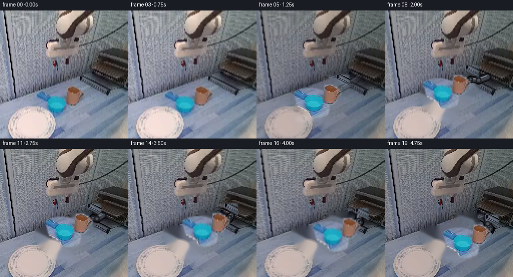
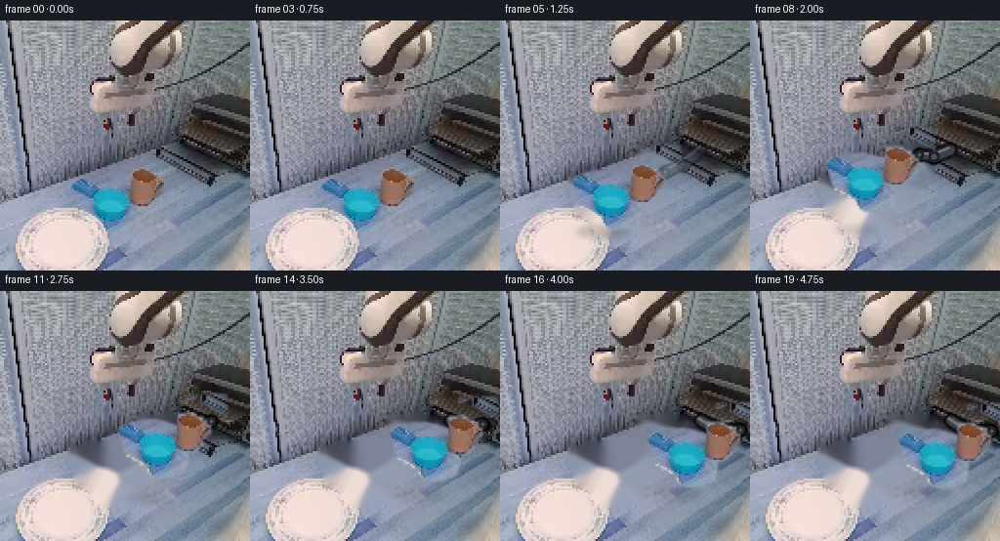
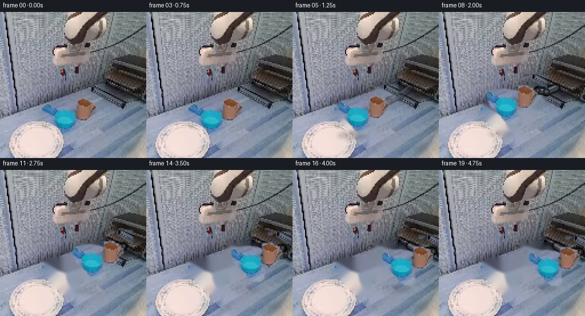
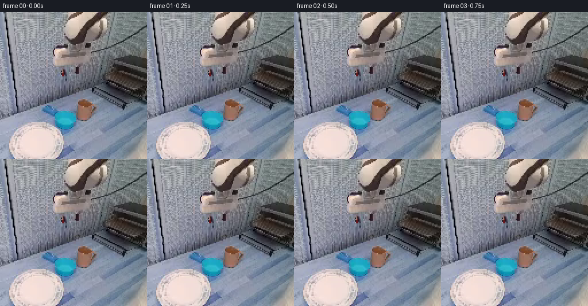

CODING AGENTS AS PIXEL WORLD MODELS
traex/DeepSeek-V4.1-Flash · common50_0044
点击播放 · 原生 RGB 像素
逐轮保存的候选
回放视频、检查图与代码变化。
每份候选均可单独播放。实际图片检查记录在下方工具轨迹中。
候选 01播放与检查图
点击播放 · 原生 RGB 像素

展开代码变化
--- 上一保存版本
+++ 本次保存版本
@@ -0,0 +1,264 @@
+from pathlib import Path
+
+import cv2
+import numpy as np
+from PIL import Image
+
+import artifact_io
+
+
+CASE_DIR = Path(__file__).resolve().parent
+N_FRAMES = 20
+H = W = 256
+
+
+def smoothstep(value):
+ value = float(np.clip(value, 0.0, 1.0))
+ return value * value * (3.0 - 2.0 * value)
+
+
+def cup_silhouette():
+ """Rounded, slightly tapered vessel silhouette in source-frame coordinates."""
+ yy, xx = np.indices((H, W), dtype=np.float32)
+ # Centerline follows the visible vessel's slight lean toward the lower right.
+ t = np.clip((yy - 157.0) / 61.0, 0.0, 1.0)
+ cx = 104.5 + 15.0 * t
+ half_width = np.interp(
+ yy,
+ [156, 159, 163, 167, 172, 180, 190, 198, 206, 213, 218],
+ [10, 24, 30, 33, 34, 33, 33, 31, 28, 22, 12],
+ )
+ top_cap = np.clip((yy - 156.0) / 10.0, 0.0, 1.0)
+ bottom_cap = np.clip((218.0 - yy) / 7.0, 0.0, 1.0)
+ half_width *= np.minimum(top_cap, bottom_cap) ** 0.28
+ mask = (np.abs(xx - cx) <= half_width) & (yy >= 156) & (yy <= 218)
+ return mask.astype(np.uint8) * 255
+
+
+def object_masks(image):
+ """Recover the blue vessel and the moving wrist/gripper cluster."""
+ rgb = image.astype(np.float32)
+ r, g, b = rgb.transpose(2, 0, 1)
+ yy, xx = np.indices((H, W))
+ peak = rgb.max(axis=2)
+
+ cup_region = cup_silhouette()
+ cup_color = (
+ (b > r + 7)
+ & (b > g - 5)
+ & (b > 82)
+ & (xx >= 64)
+ & (xx <= 145)
+ & (yy >= 154)
+ & (yy <= 220)
+ ).astype(np.uint8) * 255
+ cup_color = cv2.morphologyEx(
+ cup_color, cv2.MORPH_CLOSE, np.ones((3, 3), np.uint8)
+ )
+ cup_mask = cv2.bitwise_and(cup_region, cup_color)
+ cup_mask = cv2.morphologyEx(
+ cup_mask, cv2.MORPH_CLOSE, np.ones((3, 3), np.uint8)
+ )
+
+ skin = (
+ (r > g + 10)
+ & (r > b + 5)
+ & (r > 62)
+ & (xx >= 126)
+ & (xx <= 174)
+ & (yy >= 142)
+ & (yy <= 198)
+ )
+ wrist_dark = (
+ (peak < 112)
+ & (xx >= 145)
+ & (xx <= 184)
+ & (yy >= 132)
+ & (yy <= 195)
+ )
+ cluster = (skin | wrist_dark).astype(np.uint8) * 255
+ cluster = cv2.morphologyEx(
+ cluster, cv2.MORPH_CLOSE, np.ones((5, 5), np.uint8)
+ )
+ cluster = cv2.dilate(cluster, np.ones((3, 3), np.uint8), iterations=1)
+ return cup_mask, cluster
+
+
+def soft_alpha(mask, feather=1.4):
+ alpha = mask.astype(np.float32) / 255.0
+ return cv2.GaussianBlur(alpha, (0, 0), feather)
+
+
+def extract_rgba(image, mask, fill_mask=None, feather=1.4):
+ """Create a clean sprite; pixels inside the object but hidden are inpainted."""
+ alpha = soft_alpha(mask, feather)
+ texture = image.astype(np.float32).copy()
+ if fill_mask is not None:
+ texture = cv2.inpaint(
+ np.clip(texture, 0, 255).astype(np.uint8),
+ fill_mask.astype(np.uint8),
+ 5,
+ cv2.INPAINT_TELEA,
+ ).astype(np.float32)
+ texture *= alpha[..., None]
+ return texture, alpha
+
+
+def make_plate(image, cup_mask, cluster_mask):
+ removal = cv2.bitwise_or(cup_mask, cluster_mask)
+ removal = cv2.dilate(removal, np.ones((5, 5), np.uint8), iterations=1)
+ removal = cv2.GaussianBlur(removal, (0, 0), 1.0)
+ return cv2.inpaint(
+ image.astype(np.uint8), removal, 6, cv2.INPAINT_TELEA
+ )
+
+
+def composite_sprite(base, texture, alpha, dx, dy):
+ """Translate an RGBA sprite by integer pixels."""
+ dx = int(round(dx))
+ dy = int(round(dy))
+ shifted_tex = np.zeros_like(texture)
+ shifted_alpha = np.zeros_like(alpha)
+ x0, x1 = max(0, -dx), min(W, W - dx)
+ y0, y1 = max(0, -dy), min(H, H - dy)
+ if x0 >= x1 or y0 >= y1:
+ return base
+ shifted_tex[y0 + dy : y1 + dy, x0 + dx : x1 + dx] = texture[y0:y1, x0:x1]
+ shifted_alpha[y0 + dy : y1 + dy, x0 + dx : x1 + dx] = alpha[y0:y1, x0:x1]
+ return base * (1.0 - shifted_alpha[..., None]) + shifted_tex
+
+
+def draw_shadow(canvas, cx, floor_y, lift, alpha_scale=1.0):
+ layer = np.zeros_like(canvas)
+ radius_x = int(round(28 - min(lift, 24) * 0.22))
+ radius_y = max(3, int(round(7 - min(lift, 24) * 0.08)))
+ cv2.ellipse(
+ layer,
+ (int(round(cx)), int(round(floor_y))),
+ (radius_x, radius_y),
+ 0,
+ 0,
+ 360,
+ (36, 45, 57),
+ -1,
+ cv2.LINE_AA,
+ )
+ layer = cv2.GaussianBlur(layer, (0, 0), 3.0)
+ strength = (0.22 - min(lift, 24) * 0.0035) * alpha_scale
+ return canvas * (1.0 - strength) + layer.astype(np.float32) * strength
+
+
+def draw_arm_bridge(canvas, dx, dy, reveal):
+ """Bridge the fixed upper arm to the translated wrist with rigid links."""
+ if reveal <= 0.001:
+ return canvas
+ shoulder = np.array([205.0, 132.0])
+ fixed_wrist = np.array([169.0, 159.0])
+ wrist = fixed_wrist + np.array([dx, dy])
+ elbow = 0.56 * shoulder + 0.44 * wrist + np.array([-3.0, 5.0])
+
+ layer = np.zeros_like(canvas)
+ mask = np.zeros((H, W), np.uint8)
+ for start, end, width in ((shoulder, elbow, 10), (elbow, wrist, 8)):
+ p0 = tuple(np.round(start).astype(int))
+ p1 = tuple(np.round(end).astype(int))
+ cv2.line(mask, p0, p1, 255, width + 3, cv2.LINE_AA)
+ cv2.line(layer, p0, p1, (28, 29, 34), width + 2, cv2.LINE_AA)
+ cv2.line(layer, p0, p1, (62, 65, 73), width - 2, cv2.LINE_AA)
+ offset = np.array([-2.0, -2.0])
+ cv2.line(
+ layer,
+ tuple(np.round(start + offset).astype(int)),
+ tuple(np.round(end + offset).astype(int)),
+ (108, 112, 121),
+ 2,
+ cv2.LINE_AA,
+ )
+
+ for point, radius in ((elbow, 6), (wrist, 5)):
+ center = tuple(np.round(point).astype(int))
+ cv2.circle(mask, center, radius + 2, 255, -1, cv2.LINE_AA)
+ cv2.circle(layer, center, radius, (32, 33, 38), -1, cv2.LINE_AA)
+ cv2.circle(layer, center, max(2, radius - 3), (79, 82, 91), -1, cv2.LINE_AA)
+
+ alpha = cv2.GaussianBlur(mask.astype(np.float32) / 255.0, (0, 0), 0.75)
+ alpha *= reveal
+ return canvas * (1.0 - alpha[..., None]) + layer.astype(np.float32) * alpha[..., None]
+
+
+def motion_offset(frame_index):
+ """Lift, transfer to the rack, then lower and settle."""
+ if frame_index <= 4:
+ return 0.0, 0.0, 0.0
+ p = float(np.clip((frame_index - 4) / 15.0, 0.0, 1.0))
+ keys = (
+ (0.00, 0.0, 0.0),
+ (0.27, 2.5, -22.0),
+ (0.70, 34.0, -23.0),
+ (0.88, 41.0, -6.0),
+ (1.00, 42.0, 0.0),
+ )
+ for (p0, x0, y0), (p1, x1, y1) in zip(keys[:-1], keys[1:]):
+ if p <= p1:
+ u = smoothstep((p - p0) / max(p1 - p0, 1e-6))
+ return x0 + (x1 - x0) * u, y0 + (y1 - y0) * u, p
+ return 42.0, 0.0, 1.0
+
+
+def make_frames(image):
+ cup_mask, cluster_mask = object_masks(image)
+ cup_color = (
+ (image[:, :, 2].astype(np.int16) > image[:, :, 0].astype(np.int16) + 7)
+ & (image[:, :, 2] > 80)
+ ).astype(np.uint8) * 255
+ cup_fill = cv2.bitwise_and(cup_mask, cv2.bitwise_not(cup_color))
+
+ cup_texture, cup_alpha = extract_rgba(
+ image, cup_mask, fill_mask=cup_fill, feather=1.15
+ )
+ cluster_texture, cluster_alpha = extract_rgba(
+ image, cluster_mask, feather=1.2
+ )
+ plate = make_plate(image, cup_mask, cluster_mask)
+
+ frames = []
+ for index in range(N_FRAMES):
+ dx, dy, phase = motion_offset(index)
+ if index <= 4:
+ frame = image.copy()
+ else:
+ frame = plate.astype(np.float32)
+ frame = draw_shadow(frame, 104.5 + dx, 217.0, -dy)
+ reveal = smoothstep(phase / 0.18)
+ frame = draw_arm_bridge(frame, dx, dy, reveal)
+ frame = composite_sprite(
+ frame, cluster_texture, cluster_alpha, dx, dy
+ )
+ frame = composite_sprite(frame, cup_texture, cup_alpha, dx, dy)
+
+ frames.append(np.clip(np.rint(frame), 0, 255).astype(np.uint8))
+
+ # The benchmark contract requires an exact source copy for frame zero.
+ frames[0] = image.copy()
+ return np.stack(frames)
+
+
+def main():
+ image = np.asarray(Image.open(CASE_DIR / "first_frame.png").convert("RGB"))
+ frames = make_frames(image)
+ artifact_io.save(frames, CASE_DIR)
+
+ writer = cv2.VideoWriter(
+ str(CASE_DIR / "video.mp4"),
+ cv2.VideoWriter_fourcc(*"mp4v"),
+ 4.0,
+ (W, H),
+ )
+ if writer.isOpened():
+ for frame in frames:
+ writer.write(cv2.cvtColor(frame, cv2.COLOR_RGB2BGR))
+ writer.release()
+
+
+if __name__ == "__main__":
+ main()
候选 02播放与检查图
点击播放 · 原生 RGB 像素

展开代码变化
--- 上一保存版本
+++ 本次保存版本
@@ -130,22 +130,25 @@
def draw_shadow(canvas, cx, floor_y, lift, alpha_scale=1.0):
layer = np.zeros_like(canvas)
+ mask = np.zeros((H, W), np.uint8)
radius_x = int(round(28 - min(lift, 24) * 0.22))
radius_y = max(3, int(round(7 - min(lift, 24) * 0.08)))
cv2.ellipse(
- layer,
+ mask,
(int(round(cx)), int(round(floor_y))),
(radius_x, radius_y),
0,
0,
360,
- (36, 45, 57),
+ 255,
-1,
cv2.LINE_AA,
)
- layer = cv2.GaussianBlur(layer, (0, 0), 3.0)
+ mask = cv2.GaussianBlur(mask, (0, 0), 3.0)
+ layer[:] = (36, 45, 57)
strength = (0.22 - min(lift, 24) * 0.0035) * alpha_scale
- return canvas * (1.0 - strength) + layer.astype(np.float32) * strength
+ alpha = (mask.astype(np.float32) / 255.0) * strength
+ return canvas * (1.0 - alpha[..., None]) + layer * alpha[..., None]
def draw_arm_bridge(canvas, dx, dy, reveal):
@@ -190,19 +193,19 @@
"""Lift, transfer to the rack, then lower and settle."""
if frame_index <= 4:
return 0.0, 0.0, 0.0
- p = float(np.clip((frame_index - 4) / 15.0, 0.0, 1.0))
+ p = float(np.clip((frame_index - 4) / 13.0, 0.0, 1.0))
keys = (
(0.00, 0.0, 0.0),
(0.27, 2.5, -22.0),
- (0.70, 34.0, -23.0),
- (0.88, 41.0, -6.0),
- (1.00, 42.0, 0.0),
+ (0.68, 64.0, -27.0),
+ (0.88, 77.0, -18.0),
+ (1.00, 78.0, -16.0),
)
for (p0, x0, y0), (p1, x1, y1) in zip(keys[:-1], keys[1:]):
if p <= p1:
u = smoothstep((p - p0) / max(p1 - p0, 1e-6))
return x0 + (x1 - x0) * u, y0 + (y1 - y0) * u, p
- return 42.0, 0.0, 1.0
+ return 78.0, -16.0, 1.0
def make_frames(image):
@@ -228,7 +231,7 @@
frame = image.copy()
else:
frame = plate.astype(np.float32)
- frame = draw_shadow(frame, 104.5 + dx, 217.0, -dy)
+ frame = draw_shadow(frame, 104.5 + dx, 217.0 - 10.0 * phase, -dy)
reveal = smoothstep(phase / 0.18)
frame = draw_arm_bridge(frame, dx, dy, reveal)
frame = composite_sprite(
候选 03播放与检查图
点击播放 · 原生 RGB 像素


展开代码变化
--- 上一保存版本
+++ 本次保存版本
@@ -20,17 +20,21 @@
def cup_silhouette():
"""Rounded, slightly tapered vessel silhouette in source-frame coordinates."""
yy, xx = np.indices((H, W), dtype=np.float32)
- # Centerline follows the visible vessel's slight lean toward the lower right.
- t = np.clip((yy - 157.0) / 61.0, 0.0, 1.0)
- cx = 104.5 + 15.0 * t
+ # The vessel is narrow at the rim and widens into a shallow bowl. Its
+ # lower-left edge is partially hidden by the peach support.
+ cx = np.interp(
+ yy,
+ [156, 162, 170, 184, 194, 204, 212, 218],
+ [108, 108, 107, 108, 114, 120, 124, 125],
+ )
half_width = np.interp(
yy,
- [156, 159, 163, 167, 172, 180, 190, 198, 206, 213, 218],
- [10, 24, 30, 33, 34, 33, 33, 31, 28, 22, 12],
- )
- top_cap = np.clip((yy - 156.0) / 10.0, 0.0, 1.0)
- bottom_cap = np.clip((218.0 - yy) / 7.0, 0.0, 1.0)
- half_width *= np.minimum(top_cap, bottom_cap) ** 0.28
+ [156, 158, 162, 166, 170, 178, 188, 194, 200, 206, 212, 218],
+ [11, 21, 27, 28, 27, 25, 24, 20, 18, 16, 14, 9],
+ )
+ top_cap = np.clip((yy - 155.5) / 4.0, 0.0, 1.0)
+ bottom_cap = np.clip((219.0 - yy) / 5.0, 0.0, 1.0)
+ half_width *= np.minimum(top_cap, bottom_cap) ** 0.22
mask = (np.abs(xx - cx) <= half_width) & (yy >= 156) & (yy <= 218)
return mask.astype(np.uint8) * 255
@@ -44,9 +48,9 @@
cup_region = cup_silhouette()
cup_color = (
- (b > r + 7)
- & (b > g - 5)
- & (b > 82)
+ (b > r + 15)
+ & (b > g + 3)
+ & (b > 110)
& (xx >= 64)
& (xx <= 145)
& (yy >= 154)
可观测工具轨迹
实际执行的命令与返回图片。
命令 1exit 0
/bin/bash -c "pwd && rg --files -g '"'!*.mp4'"' -g '"'!*.mov'"' | sort"
命令 2exit 0
/bin/bash -c "printf '%s\\n' '--- prompt.txt ---'; sed -n '1,240p' prompt.txt; printf '%s\\n' '--- GENERATION_RULES.md ---'; sed -n '1,320p' GENERATION_RULES.md"
命令 3exit 0
/bin/bash -c "find . -maxdepth 2 -type f -printf '%p\\t%s bytes\\n' | sort; printf '%s\\n' '--- tools ---'; command -v ffmpeg || true; command -v ffprobe || true; command -v python3 || true; python3 - <<'PY'
try:
import PIL; print('PIL', PIL.__version__)
except Exception as e: print('no PIL',e)
try:
import numpy; print('numpy', numpy.__version__)
except Exception as e: print('no numpy',e)
try:
import cv2; print('cv2', cv2.__version__)
except Exception as e: print('no cv2',e)
PY"命令 4exit 0
/bin/bash -c "sed -n '1,260p' artifact_io.py; printf '%s\\n' '--- task_spec.json ---'; cat task_spec.json; printf '%s\\n' '--- player_template.html ---'; sed -n '1,260p' player_template.html"
命令 5exit 0
/bin/bash -c "python3 - <<'PY'
from PIL import Image
import numpy as np
im=Image.open('first_frame.png').convert('RGB')
a=np.asarray(im)
print('size',im.size,'mode',im.mode,'shape',a.shape,'dtype',a.dtype)
print('min/max/mean',a.min(),a.max(),a.mean(axis=(0,1)))
print('unique colors',len(np.unique(a.reshape(-1,3),axis=0)))
# most common colors
u,c=np.unique(a.reshape(-1,3),axis=0,return_counts=True)
for i in np.argsort(c)[-25:][::-1]: print(tuple(u[i]),int(c[i]))
# coarse block mean 16x16 with labels RGB-> nearest basic
print('coarse grid')
chars=' .:-=+*#%@'
g=a.mean(2)
for y in range(0,256,8):
s=''
for x in range(0,256,8):
v=g[y:y+8,x:x+8].mean(); s+=chars[min(9,int(v/256*10))]
print(s)
PY"命令 6exit 0
/bin/bash -c "python3 - <<'PY'
import cv2, numpy as np
from PIL import Image
im=np.asarray(Image.open('first_frame.png').convert('RGB'))
# kmeans with exact pixel sample
Z=im.reshape(-1,3).astype(np.float32)
crit=(cv2.TERM_CRITERIA_EPS+cv2.TERM_CRITERIA_MAX_ITER,100,0.2)
for k in [8,12,16,24]:
_,lab,cent=cv2.kmeans(Z,k,None,crit,5,cv2.KMEANS_PP_CENTERS)
counts=np.bincount(lab.ravel(),minlength=k)
order=np.argsort(counts)[::-1]
print('\\nK=',k)
for j in order:
m=lab.reshape(256,256)==j
ys,xs=np.where(m)
print(f'{j:2d} n={counts[j]:5d} rgb=({cent[j,0]:.0f},{cent[j,1]:.0f},{cent[j,2]:.0f}) box=({xs.min()},{ys.min()})-({xs.max()},{ys.max()}) meanxy=({xs.mean():.1f},{ys.mean():.1f})')
# make 32x32 map majority labels
mp=np.zeros((32,32),int)
for yy in range(32):
for xx in range(32):
vals,c=np.unique(lab.reshape(256,256)[yy*8:yy*8+8,xx*8:xx*8+8],return_counts=True)
mp[yy,xx]=vals[c.argmax()]
chars='0123456789ABCDEFGHIJKLMNOPQRSTUVWXYZ'
print('map k',k)
for row in mp: print(''.join(chars[v] for v in row))
PY"命令 7exit 0
/bin/bash -c "python3 - <<'PY'
import numpy as np, cv2
from PIL import Image
im=np.asarray(Image.open('first_frame.png').convert('RGB'))
g=cv2.cvtColor(im,cv2.COLOR_RGB2GRAY)
e=cv2.Canny(g,40,100)
# edge density and gray levels at 64 x64 blocks 4x4
chars=' .:-=+*#%@'
print('EDGE DENSITY 64x64 blocks')
for y in range(0,256,4):
s=''
for x in range(0,256,4):
v=e[y:y+4,x:x+4].mean()/255
s+=chars[min(9,int(v*30))]
print(s)
print('\\nLUMA 64x64')
for y in range(0,256,4):
s=''
for x in range(0,256,4):
v=g[y:y+4,x:x+4].mean()
s+=chars[min(9,int(v/256*10))]
print(s)
print('\\nRGB at centers grid 8px')
for y in range(4,256,16):
vals=[]
for x in range(4,256,16):
c=np.median(im[y-3:y+4,x-3:x+4].reshape(-1,3),0).astype(int)
vals.append('%02x%02x%02x'%tuple(c))
print(f'{y:3d}', ' '.join(vals))
PY"命令 8exit 0
/bin/bash -c "python3 - <<'PY'
from PIL import Image
import numpy as np, cv2
im=np.asarray(Image.open('first_frame.png').convert('RGB')).astype(float)
r,g,b=im.transpose(2,0,1)
# classes
cls=np.full((256,256),' ',dtype='<U1')
# background gray/blue default .
cls[:]='.'
# blue vessel: b exceeds r and saturation
mx=im.max(2); mn=im.min(2); sat=(mx-mn)/np.maximum(mx,1)
cls[(b>r+18)&(b>g+5)&(g>70)]='B'
cls[(b>r+30)&(b>g+20)]='C'
# cream peach red high
cls[(r>g+8)&(g>b+3)&(r>170)]='P'
cls[(r>210)&(g>190)&(b>180)]='W'
# skin/brown
cls[(r>g+12)&(g>b+5)&(r>90)&(r<190)]='S'
# dark
cls[(mx<70)]='K'
cls[(mx<110)&(cls"'!='"'K')]='k'
# labels crop x60:148 y140:224, each 2x2 block majority
for y in range(140,224,2):
s=''
for x in range(60,148,2):
vals=cls[y:y+2,x:x+2].ravel()
u,c=np.unique(vals,return_counts=True)
s+=u[c.argmax()]
print(f'{y:3d} '+s)
print('x labels each char 2px starting 60')
print(' '+''.join(str((60+i*2)//10%10) for i in range(44)))
print(' '+''.join(str((60+i*2)%10) for i in range(44)))
PY"命令 9exit 0
/bin/bash -c "python3 - <<'PY'
import cv2, numpy as np
from PIL import Image
im=np.asarray(Image.open('first_frame.png').convert('RGB'))
g=cv2.cvtColor(im,cv2.COLOR_RGB2GRAY)
e=cv2.Canny(g,35,90)
lines=cv2.HoughLinesP(e,1,np.pi/180,threshold=18,minLineLength=18,maxLineGap=4)
print('Hough lines length>=18')
res=[]
for L in lines[:,0]:
x1,y1,x2,y2=map(int,L); dx=x2-x1;dy=y2-y1;l=(dx*dx+dy*dy)**.5; ang=np.degrees(np.arctan2(dy,dx))
res.append((l,ang,x1,y1,x2,y2))
for r in sorted(res,reverse=True)[:100]: print('%5.1f %7.1f (%3d,%3d)-(%3d,%3d)'%r)
# color class map 4px crop right side based kmeans k=12
Z=im.reshape(-1,3).astype(np.float32)
crit=(cv2.TERM_CRITERIA_EPS+cv2.TERM_CRITERIA_MAX_ITER,100,0.2)
_,lab,cent=cv2.kmeans(Z,12,None,crit,8,cv2.KMEANS_PP_CENTERS)
counts=np.bincount(lab.ravel(),minlength=12); order=np.argsort(counts)[::-1]
mp=np.empty(12,int); chars='0123456789AB'
for rank,j in enumerate(order): mp[j]=rank
print('\\ncluster legend')
for rank,j in enumerate(order): print(chars[rank],f'rgb=({cent[j,0]:.0f},{cent[j,1]:.0f},{cent[j,2]:.0f})',counts[j])
print('\\nmap crop x128-256 y0-256 blocks 4')
for y in range(0,256,4):
s=''
for x in range(128,256,4):
vals=lab.reshape(256,256)[y:y+4,x:x+4].ravel(); u,c=np.unique(vals,return_counts=True);s+=chars[mp[u[c.argmax()]]]
print(f'{y:3d} '+s)
PY"命令 10exit 0
/bin/bash -c "python3 - <<'PY'
from PIL import Image
import numpy as np
im=np.asarray(Image.open('first_frame.png').convert('RGB')).astype(int)
r,g,b=im.transpose(2,0,1)
# masks
masks={
'peach': (r>175)&(r>g+5)&(g>b+2),
'pinkbright':(r>200)&(r>g+5)&(g>b+2),
'blue':(b>r+20)&(b>g+5)&(g>50),
'dark':(im.max(2)<60),
'darkgray':(im.max(2)<100),
}
for name,m in masks.items():
ys,xs=np.where(m)
print('\\n',name,'count',len(xs),'box', (xs.min(),ys.min(),xs.max(),ys.max()))
print('row spans every 4')
for y in range(0,256,4):
xx=np.where(m[y])[0]
if len(xx): print(f'{y:3d}: {xx.min():3d}-{xx.max():3d} n{len(xx):3d}', end=' | ')
if y%16==12: print()
print()
# Blue exact mask bbox/centroid, per row spans
m=masks['blue']
print('\\nblue row spans')
for y in range(150,220):
xx=np.where(m[y])[0]
if len(xx): print(y, xx.min(),xx.max(),len(xx))
# peach contours via simple connected components with scipy?
try:
from scipy import ndimage
for name,m in masks.items():
lab,n=ndimage.label(m)
cs=np.bincount(lab.ravel()); ids=np.argsort(cs[1:])[::-1][:8]+1
print('\\ncomponents',name,n)
for i in ids:
ys,xs=np.where(lab==i);print(i,cs[i],(xs.min(),ys.min(),xs.max(),ys.max()),'mean',xs.mean(),ys.mean())
except Exception as e: print(e)
PY"命令 11exit 0
/bin/bash -c "python3 - <<'PY'
import numpy as np, cv2
from PIL import Image
im=np.asarray(Image.open('first_frame.png').convert('RGB'))
g=cv2.cvtColor(im,cv2.COLOR_RGB2GRAY).astype(float)
# local anisotropy/structure tensor, output grid 4px
Ix=cv2.Sobel(g,cv2.CV_64F,1,0,ksize=3); Iy=cv2.Sobel(g,cv2.CV_64F,0,1,ksize=3)
# blur tensor
Jxx=cv2.GaussianBlur(Ix*Ix,(0,0),3); Jyy=cv2.GaussianBlur(Iy*Iy,(0,0),3); Jxy=cv2.GaussianBlur(Ix*Iy,(0,0),3)
# angle of dominant gradient? eigenvector minor. orientation = .5 atan2(2xy,xx-yy)+90 => tangent
ang=0.5*np.arctan2(2*Jxy,Jxx-Jyy)+np.pi/2
coh=np.sqrt((Jxx-Jyy)**2+4*Jxy**2)/(Jxx+Jyy+1e-6)
mag=np.sqrt(Jxx+Jyy)
chars='|/\\\\-' # orientation indices tangent roughly 0 horiz, pi/2 vert
print('STRUCTURE orientation/coherence, char only if coherence>.35; crop x120+')
for y in range(0,200,4):
s=''
for x in range(120,256,4):
a=ang[y:y+4,x:x+4].mean()%(np.pi)
c=coh[y:y+4,x:x+4].mean()
if c<.35:s+=' ';continue
# 0 horiz, 45 rising, 90 vert, 135 falling (screen)
i=int((a+np.pi/8)%np.pi/(np.pi/4))
s+='-/\\\\|'[i]
print(f'{y:3d} '+s)
# dark gray occupancy connected skeleton-like contours using morphology perhaps output visual geometry bboxes of clusters
# list quadrants median colors and row block boundaries
print('\\nRGB medians by 8x8 cell x=128..255 y=0..176')
for y in range(0,176,8):
vals=[]
for x in range(128,256,8):
c=np.median(im[y:y+8,x:x+8].reshape(-1,3),0).astype(int)
vals.append('%02x%02x%02x'%tuple(c))
print(f'{y:3d}', ' '.join(vals))
PY"命令 12exit 0
/bin/bash -c "python3 - <<'PY'
from PIL import Image
import numpy as np
im=np.asarray(Image.open('first_frame.png').convert('RGB'))
# print truecolor via ANSI half blocks maybe terminal output not visual but useful? use compact hex grid 2x2 median x=100..200 y=140..210
for y in range(140,210,2):
vals=[]
for x in range(100,204,4):
c=np.median(im[y:y+2,x:x+4].reshape(-1,3),0).astype(int)
vals.append('%02x%02x%02x'%tuple(c))
print(f'{y:3d} '+' '.join(vals))
PY"命令 13exit 0
/bin/bash -c "python3 - <<'PY'
from PIL import Image
import numpy as np
im=np.asarray(Image.open('first_frame.png').convert('RGB')).astype(float)
# sat and hue rough; print high saturation points/components boxes and row spans around blue
mx=im.max(2);mn=im.min(2); sat=(mx-mn)/np.maximum(mx,1)
m=(sat>.45)&(im[:,:,2]>im[:,:,0]+10)&(mx>80)
# connected comps
from scipy import ndimage
lab,n=ndimage.label(m)
cs=np.bincount(lab.ravel())
print('high sat blue comps')
for i in np.argsort(cs[1:])[::-1][:20]+1:
ys,xs=np.where(lab==i)
print(i,cs[i],(xs.min(),ys.min(),xs.max(),ys.max()),'mean',round(xs.mean(),1),round(ys.mean(),1))
print('blue row details x 60-150')
for y in range(160,210):
xx=np.where(m[y,60:150])[0]+60
if len(xx):
# runs
runs=[]; st=pr=xx[0]
for x in xx[1:]:
if x>pr+1:runs.append((st,pr));st=x
pr=x
runs.append((st,pr))
print(y,runs)
PY"命令 14exit 0
/bin/bash -c "python3 - <<'PY'
import cv2,numpy as np
from PIL import Image
im=np.asarray(Image.open('first_frame.png').convert('RGB'))
# save 8x upscaled nearest crop and some diagnostic masks? write allowed; candidate diagnostics okay
for name,box in [('vessel',(60,150,150,225)),('arm',(110,0,256,180)),('table',(0,130,120,256)),('full',(0,0,256,256))]:
x1,y1,x2,y2=box
crop=Image.fromarray(im[y1:y2,x1:x2])
crop.resize(((x2-x1)*6,(y2-y1)*6),Image.Resampling.NEAREST).save(f'diag_{name}.png')
# grayscale inverted edge output for arm
g=cv2.cvtColor(im,cv2.COLOR_RGB2GRAY)
e=cv2.Canny(g,25,75)
Image.fromarray(e).resize((1024,1024),Image.Resampling.NEAREST).save('diag_edges.png')
print('saved diagnostics')
PY"命令 15exit 0
/bin/bash -c "python3 - <<'PY'
from PIL import Image
import numpy as np
im=np.asarray(Image.open('first_frame.png').convert('RGB')).astype(int)
# ansi truecolor mosaic 2x2? print at 128x128 using bg ANSI maybe output retains color in tool? use half block chars with fg/bg for 2px vertical
# downsample by 2, then render each pixel as upper/lower half blocks (128 cols x 64 lines)
sm=im[::2,::2]
# just generate html-like color values impossible; output via ANSI escapes
for y in range(0,128,1):
s=''
for x in range(128):
c1=sm[y,x]; c2=sm[y+1,x] if y+1<128 else c1
s+=f'\\x1b[38;2;{c1[0]};{c1[1]};{c1[2]}m\\x1b[48;2;{c2[0]};{c2[1]};{c2[2]}mâ'
print(s+'\\x1b[0m')
PY"命令 16exit 0
/bin/bash -c "python3 - <<'PY'
from PIL import Image
import numpy as np
im=np.asarray(Image.open('first_frame.png').convert('RGB')).astype(float)
r,g,b=im.transpose(2,0,1)
mx=im.max(2); mn=im.min(2); l=im.mean(2); sat=(mx-mn)/np.maximum(mx,1)
# pixel labels
out=np.full((256,256),' ',dtype='<U1')
# blue high
out[(b>r+20)&(b>g+8)&(g>50)]='B'
out[(b>r+25)&(b>g+20)&(mx>110)]='C'
# peach/cream
out[(r>g+5)&(g>b+2)&(l>165)]='P'
out[(r>g+8)&(g>b+5)&(l>90)&(l<=165)]='N'
out[(mx>205)&(sat<.10)]='W'
out[(l<55)]='D'
out[(l<95)]='d'
out[(l<135)]='m'
out[(l<175)]='g'
out[l>=175]='L'
# use most common 4x4 with priority: blue, peach, dark, etc; but majority
for y in range(0,256,4):
s=''
for x in range(0,256,4):
vals=out[y:y+4,x:x+4].ravel();u,c=np.unique(vals,return_counts=True);s+=u[c.argmax()]
print(f'{y:3d} '+s)
PY"命令 17exit 0
/bin/bash -c "python3 - <<'PY'
import cv2,numpy as np
from PIL import Image
im=np.asarray(Image.open('first_frame.png').convert('RGB'))
g=cv2.cvtColor(im,cv2.COLOR_RGB2GRAY)
# blur then canny
b=cv2.GaussianBlur(g,(3,3),0)
e=cv2.Canny(b,30,80)
# dilate maybe
# use sobel magnitude and threshold
sx=cv2.Sobel(b,cv2.CV_32F,1,0,ksize=3);sy=cv2.Sobel(b,cv2.CV_32F,0,1,ksize=3);mag=np.hypot(sx,sy)
chars=' .:-=+*#%@'
print('SOBEL MAG at 2px blocks')
for y in range(0,256,2):
s=''
for x in range(0,256,2):
v=np.percentile(mag[y:y+2,x:x+2],90)
# log scaling
q=min(9,int(np.log1p(v)/np.log1p(700)*10))
s+=chars[q]
print(s)
PY"命令 18exit 0
/bin/bash -c "python3 - <<'PY'
from PIL import Image
import numpy as np
im=np.asarray(Image.open('first_frame.png').convert('RGB')).astype(float)
r,g,b=im.transpose(2,0,1)
# build coarse labels with thresholds, then output crop around cup each char = 2x2 with max priority
out=np.full((256,256),'.',dtype='<U1')
# background classes
out[:]='.'
# cream lower left
out[(r>170)&(r>g+3)&(g>b)&(b<220)]='P'
# blue cup high saturation
m=(b-r>25)&(b-g>15)&(g>80)&(b>130)
out[m]='B'
# cyan rim
out[(b-r>30)&(b-g>20)&(b>170)]='C'
# dark
mx=im.max(2); l=im.mean(2)
out[(mx<75)]='K'
out[(l<110)&(out=='.')]='k'
# mid blue-gray
out[(b>r+5)&(b>g-5)&(l>100)&(out=='.')]='m'
out[(l>160)&(out=='.')]='L'
# output crop x64-144 y152-220, char 1px exact maybe
for y in range(152,220):
print(f'{y:3d} '+''.join(out[y,64:144]))
print('x '+''.join(str((x//10)%10) for x in range(64,144)))
print('x '+''.join(str(x%10) for x in range(64,144)))
PY"命令 19exit 0
/bin/bash -c "python3 - <<'PY'
from PIL import Image
import numpy as np
im=np.asarray(Image.open('first_frame.png').convert('RGB')).astype(int)
# Inspect blue pixels exact clusters at rows using actual rgb runs and mean colors
for y in [164,168,172,176,180,184,188,192,196,200,204,208,212,216,220]:
print('\\ny',y)
# runs where blue high sat
b=im[y,:,2];r=im[y,:,0];g=im[y,:,1]
m=(b-r>20)&(b-g>5)&(b>120)
xx=np.where(m)[0]
runs=[]
if len(xx):
st=pr=xx[0]
for x in xx[1:]:
if x>pr+1:runs.append((st,pr));st=x
pr=x
runs.append((st,pr))
print('runs',runs)
for a,c in runs:
if a>=64 and c<=145:
print('segment',a,c,'median',np.median(im[y,a:c+1],0).astype(int),'start/end',im[y,a],im[y,c])
PY"命令 20exit 0
/bin/bash -c "python3 - <<'PY'
from PIL import Image
import numpy as np
im=np.asarray(Image.open('first_frame.png').convert('RGB')).astype(int)
# print blue values sampled grid for vessel
for y in range(160,212,2):
print(f'{y:3d}:',end=' ')
for x in range(72,134,2):
p=im[y,x]
# show saturation blue / bright / dark / other
r,g,b=p
if b-r>45 and b>140: c='C'
elif b-r>20 and b>100:c='B'
elif max(p)<80:c='K'
elif max(p)<120:c='k'
elif b-r>8:c='m'
elif r-g>12 and g-b>5:c='S'
elif max(p)>190:c='W'
else:c='.'
print(c,end='')
print()
print(' '+''.join(str(x//10%10) for x in range(72,134,2)))
print(' '+''.join(str(x%10) for x in range(72,134,2)))
PY"命令 21exit 0
/bin/bash -c "python3 - <<'PY'
from PIL import Image
import numpy as np
im=np.asarray(Image.open('first_frame.png').convert('RGB')).astype(int)
r,g,b=im.transpose(2,0,1)
mx=im.max(2);mn=im.min(2);l=im.mean(2);sat=(mx-mn)/np.maximum(mx,1)
out=np.full((256,256),' ',dtype='<U1')
out[(b>r+20)&(b>g+5)&(g>60)&(b>110)]='B'
out[(b>r+35)&(b>g+15)&(b>150)]='C'
out[(r>g+5)&(g>b)&(l>160)]='P'
out[(r>g+8)&(g>b+5)&(l>90)&(l<=160)]='N'
out[(l<60)]='D'
out[(l<95)&(out==' ')]='d'
out[(l<135)&(out==' ')]='m'
out[(l<170)&(out==' ')]='g'
out[(l>=170)&(out==' ')]='L'
for y in range(0,256,2):
s=''
for x in range(0,256,2):
vals=out[y:y+2,x:x+2].ravel();u,c=np.unique(vals,return_counts=True);s+=u[c.argmax()]
print(f'{y:3d} '+s)
PY"命令 22exit 0
/bin/bash -c "python3 - <<'PY'
from PIL import Image
import numpy as np
im=np.asarray(Image.open('first_frame.png').convert('RGB')).astype(float)
# blue cup bounding mask based saturation around x70-135 y160-212
r,g,b=im.transpose(2,0,1)
m=(b-r>30)&(b-g>15)&(b>130)&(np.indices(b.shape)[1]>=65)&(np.indices(b.shape)[1]<=140)&(np.indices(b.shape)[0]>=155)&(np.indices(b.shape)[0]<=215)
ys,xs=np.where(m)
print('bbox',xs.min(),ys.min(),xs.max(),ys.max(),'centroid',xs.mean(),ys.mean(),'count',len(xs))
# per-row spans of cup mask (including some gaps) and top/bottom widths
for y in range(158,213):
xx=np.where(m[y])[0]
if len(xx): print(y,xx.min(),xx.max(),len(xx), 'meanRGB', im[y,xx].mean(0).round(0))
# background color table around region / estimate using medians of strips
for y in [150,160,170,180,190,200,210,220]:
print('row',y,[(a,b,np.median(im[y,a:b].reshape(-1,3),0).astype(int).tolist()) for a,b in [(55,72),(72,135),(135,150),(140,170),(170,200),(200,230)]])
PY"命令 23exit 1
/bin/bash -c "python3 - <<'PY'
from PIL import Image
import numpy as np
im=np.asarray(Image.open('first_frame.png').convert('RGB')).astype(int)
# region color segmentation around cup, print every 2 px with custom nearest palette using RGB
for y in range(156,216,2):
print(f'{y:3d}',end=' ')
for x in range(64,144,2):
p=im[y:y+2,x:x+2].mean(0)
r,g,b=p
if b-r>35 and b>140: c='C'
elif b-r>18 and b>105: c='B'
elif r>190 and g>170 and b>160: c='W'
elif r-g>10 and g-b>0: c='P'
elif max(p)<60:c='D'
elif max(p)<95:c='d'
elif max(p)<130:c='m'
elif max(p)<165:c='g'
else:c='L'
print(c,end='')
print()
PY"命令 24exit 0
/bin/bash -c "python3 - <<'PY' import cv2 print(hasattr(cv2,'ximgproc')) print(hasattr(cv2,'segmentation')) PY"
命令 25exit 1
/bin/bash -c "python3 - <<'PY'
from PIL import Image
import numpy as np
im=np.asarray(Image.open('first_frame.png').convert('RGB')).astype(int)
for y in range(150,220):
print(f'{y:3d}',end=' ')
for x in range(64,145,2):
p=im[y:y+2,x:x+2].mean(0)
r,g,b=p
if b-r>35 and b>140: c='C'
elif b-r>18 and b>105: c='B'
elif r>190 and g>170 and b>160: c='W'
elif r-g>10 and g-b>0: c='P'
elif max(p)<60:c='D'
elif max(p)<95:c='d'
elif max(p)<130:c='m'
elif max(p)<165:c='g'
else:c='L'
print(c,end='')
print()
PY"命令 26exit 0
/bin/bash -c "python3 - <<'PY'
from PIL import Image
import numpy as np
im=np.asarray(Image.open('first_frame.png').convert('RGB')).astype(float)
# render selected crop 80x64 pixels as 2x2 grayscale / threshold categories, no color terminal
for y in range(150,218,2):
s=''
for x in range(64,144,2):
p=im[y:y+2,x:x+2].reshape(-1,3).mean(0); r,g,b=p
if b-r>35 and b>140: c='C'
elif b-r>18 and b>105: c='B'
elif r>190 and g>170 and b>160: c='W'
elif r-g>10 and g-b>0: c='P'
elif max(p)<60:c='D'
elif max(p)<95:c='d'
elif max(p)<130:c='m'
elif max(p)<165:c='g'
else:c='L'
s+=c
print(f'{y:3d} '+s)
PY"命令 27exit 0
/bin/bash -c "python3 - <<'PY'
from PIL import Image
import numpy as np
im=np.asarray(Image.open('first_frame.png').convert('RGB')).astype(float)
# print max blue-ish saturation around cup, row extents based thresholds including low sat
r,g,b=im.transpose(2,0,1)
for y in range(150,220):
# use b-r > thresholds; inspect x runs of contiguous b-r > 12 and b-g > 3 within 60:150
m=(b[y]-r[y]>12)&(b[y]-g[y]>3)&(b[y]>100)
xx=np.where(m[60:150])[0]+60
runs=[]
if len(xx):
st=pr=xx[0]
for x in xx[1:]:
if x>pr+1:runs.append((int(st),int(pr)));st=x
pr=x
runs.append((int(st),int(pr)))
print(y,runs)
PY"命令 28exit 0
/bin/bash -c "python3 - <<'PY'
from PIL import Image
import numpy as np
im=np.asarray(Image.open('first_frame.png').convert('RGB')).astype(float)
# print pixel row/column extents of cup based manually mask from blue excess over local background? use b-r>12 & b-g>2 restricted x60:145 and y156:216, but report bbox
r,g,b=im.transpose(2,0,1)
Y,X=np.indices(r.shape)
m=(b-r>12)&(b-g>2)&(b>100)&(X>=60)&(X<=145)&(Y>=150)&(Y<=220)
ys,xs=np.where(m);print(xs.min(),xs.max(),ys.min(),ys.max())
# count per x and row
print('col spans')
for x in range(60,146):
yy=np.where(m[:,x])[0]
if len(yy): print(x,yy.min(),yy.max(),len(yy))
PY"命令 29exit 0
/bin/bash -c "python3 - <<'PY'
from PIL import Image
import numpy as np
im=np.asarray(Image.open('first_frame.png').convert('RGB')).astype(int)
# Print RGB median grid around cup at 4px, y=156..216 x=64..144
print('ROWS are y; cols 4px from x=64; each cell median rgb')
for y in range(156,216,4):
print('y',y)
for x in range(64,144,16):
vals=[]
for xx in range(x,min(x+16,144),4):
c=np.median(im[y:y+4,xx:xx+4].reshape(-1,3),0).astype(int)
vals.append(f'{c[0]:3d},{c[1]:3d},{c[2]:3d}')
print(' ', ' | '.join(vals))
PY"命令 30exit 0
/bin/bash -c "python3 - <<'PY'
import cv2,numpy as np
from PIL import Image
im=np.asarray(Image.open('first_frame.png').convert('RGB'))
g=cv2.cvtColor(im,cv2.COLOR_RGB2GRAY)
e=cv2.Canny(g,20,60)
# use connected contour stats on threshold of gradient? Find cup edge using circle/ellipse perhaps Hough circles
circles=cv2.HoughCircles(cv2.GaussianBlur(g,(3,3),0),cv2.HOUGH_GRADIENT,dp=1,minDist=20,param1=70,param2=15,minRadius=10,maxRadius=60)
print(circles)
# edges list bounding? Crop save diagnostic with grid lines every 8 px perhaps
crop=im[145:225,55:150]
# overlay coordinate grid red? use RGB drawing; save
crop2=crop.copy()
for yy in range(0,crop2.shape[0],8): crop2[yy,:]=[255,0,0]
for xx in range(0,crop2.shape[1],8): crop2[:,xx]=[255,0,0]
Image.fromarray(crop2).resize((760,640),Image.Resampling.NEAREST).save('diag_cup_grid.png')
# horizontal/vertical edge projections in region x60:150 y145:225
cropg=g[145:225,55:150]
sy=np.abs(cv2.Sobel(cropg,cv2.CV_32F,0,1,ksize=3));sx=np.abs(cv2.Sobel(cropg,cv2.CV_32F,1,0,ksize=3))
print('edge y projection')
for i,v in enumerate(sy.sum(1)): print(i+145,int(v))
PY"命令 31exit 0
/bin/bash -c "python3 - <<'PY'
import numpy as np, cv2
from PIL import Image
im=np.asarray(Image.open('first_frame.png').convert('RGB')).astype(np.float32)
# Fit an ellipse to high blue pixels in cup region using PCA shape. Exact mask sat > .4 etc
r,g,b=im.transpose(2,0,1)
Y,X=np.indices(r.shape)
m=(b-r>35)&(b-g>15)&(b>130)&(X>=65)&(X<=140)&(Y>=160)&(Y<=212)
ys,xs=np.where(m)
pts=np.column_stack([xs,ys]).astype(np.float32)
# cv2 fitEllipse may fail not contour; find contour from mask, largest comp
mm=(m.astype(np.uint8)*255)
cnts,_=cv2.findContours(mm,cv2.RETR_EXTERNAL,cv2.CHAIN_APPROX_NONE)
for c in sorted(cnts,key=cv2.contourArea,reverse=True)[:5]:
print('area',cv2.contourArea(c),'bbox',cv2.boundingRect(c),'ellipse',cv2.fitEllipse(c) if len(c)>=5 else None)
# approximate bbox shape in rows using high sat mask ranges
print('per row extents high sat')
for y in range(160,212):
xx=np.where(m[y])[0]
if len(xx): print(y,xx.min(),xx.max())
PY"命令 32exit 0
/bin/bash -c "python3 - <<'PY'
from PIL import Image
import numpy as np
im=np.asarray(Image.open('first_frame.png').convert('RGB')).astype(int)
# print median 4x4 cell exact rgb as char color by nearest palette names for y150-220 x60-150 at 4px
pal=np.array([[20,20,25],[70,70,80],[110,120,135],[145,150,170],[180,180,190],[230,215,210],[25,155,185],[80,150,175],[150,100,90],[190,150,140]])
names='KkdgLWCBSN'
for y in range(148,220,4):
print(f'{y:3d}',end=' ')
for x in range(56,152,4):
p=np.median(im[y:y+4,x:x+4].reshape(-1,3),0)
i=np.argmin(((pal-p)**2).sum(1));print(names[i],end='')
print()
print(' '+''.join(str((x//10)%10) for x in range(56,152,4)))
print(' '+''.join(str(x%10) for x in range(56,152,4)))
PY"命令 33exit 0
/bin/bash -c "python3 - <<'PY'
import cv2,numpy as np
from PIL import Image
im=np.asarray(Image.open('first_frame.png').convert('RGB'))
g=cv2.cvtColor(im,cv2.COLOR_RGB2GRAY)
# apply bilateral and Canny, write big black edge png and occupancy at 4px
b=cv2.bilateralFilter(g,5,30,30)
e=cv2.Canny(b,25,70)
Image.fromarray(e).resize((1024,1024),Image.Resampling.NEAREST).save('diag_edges_bilateral.png')
# print edge as 2px blocks right side
for y in range(0,200,2):
s=''
for x in range(0,256,2):
s+='#' if e[y:y+2,x:x+2].any() else ' '
print(f'{y:3d} '+s)
PY"命令 34exit 0
/bin/bash -c "python3 - <<'PY'
from PIL import Image
import numpy as np
im=np.asarray(Image.open('first_frame.png').convert('RGB')).astype(float)
r,g,b=im.transpose(2,0,1)
Y,X=np.indices(r.shape)
# candidate cup mask = strong blue saturation only around 64..142 155..216, ellipse-like based on threshold
m=(b-r>18)&(b-g>5)&(b>115)&(X>=64)&(X<=142)&(Y>=155)&(Y<=216)
# report mask row spans / right and left
for y in range(155,216):
xx=np.where(m[y])[0]
if len(xx): print(y,int(xx.min()),int(xx.max()),len(xx))
PY"命令 35exit 0
/bin/bash -c "python3 - <<'PY'
from PIL import Image
import numpy as np
im=np.asarray(Image.open('first_frame.png').convert('RGB')).astype(int)
# local median smoothing to remove texture then sample hue-ish around cup 4px blocks exact
sm=im.copy()
for c in range(3): sm[:,:,c]=__import__('cv2').medianBlur(im[:,:,c].astype(np.uint8),5)
# cup region print labels
for y in range(152,216,4):
s=''
for x in range(64,144,4):
p=sm[y:y+4,x:x+4].reshape(-1,3).mean(0);r,g,b=p
if b-r>40 and b>140:c='C'
elif b-r>20 and b>110:c='B'
elif r-g>12 and g-b>2:c='P'
elif r>200 and g>180 and b>170:c='W'
elif max(p)<80:c='D'
elif max(p)<110:c='d'
elif max(p)<140:c='m'
elif max(p)<175:c='g'
else:c='L'
s+=c
print(y,s)
print(' '+''.join(str((x//10)%10) for x in range(64,144,4)))
print(' '+''.join(str(x%10) for x in range(64,144,4)))
PY"命令 36exit 0
/bin/bash -c "python3 - <<'PY'
from PIL import Image
import numpy as np
im=np.asarray(Image.open('first_frame.png').convert('RGB')).astype(float)
r,g,b=im.transpose(2,0,1); Y,X=np.indices(r.shape)
# b-r excess max in cup region, inspect row 176 color x
for y in [160,168,176,184,192,200,208,216]:
print('\\nrow',y)
for x in range(64,146,4):
p=np.median(im[y:y+2,x:x+4].reshape(-1,3),0).astype(int)
print(f'{x:3d}:{p[0]:3d},{p[1]:3d},{p[2]:3d}',end=' ')
if (x-64)%32==28:print()
print()
PY"命令 37exit 0
/bin/bash -c "python3 - <<'PY'
import numpy as np
from PIL import Image
im=np.asarray(Image.open('first_frame.png').convert('RGB')).astype(np.float32)
# Try local linear fit to colors along cup's right edge to separate cup from background. Print strongest vertical color discontinuity columns x120-145 rows165-215
for x in range(120,146):
d=np.linalg.norm(im[165:216,x+1]-im[165:216,x],axis=1)
print(x, round(float(d.mean()),1), round(float(np.median(d)),1), round(float(d.max()),1))
PY"命令 38exit 0
/bin/bash -c "python3 - <<'PY'
from PIL import Image
import numpy as np
im=np.asarray(Image.open('first_frame.png').convert('RGB')).astype(int)
# print per-pixel row y=176/184 x=88..136 with rgb compact labels every pixel grouped
for y in [164,168,172,176,180,184,188,192,196,200,204,208,212]:
print('\\ny=',y)
for x in range(88,140,4):
p=np.median(im[y:y+2,x:x+4].reshape(-1,3),0).astype(int)
print('%3d %3d %3d'%tuple(p),end=' | ')
print()
PY"命令 39exit 0
/bin/bash -c "python3 - <<'PY'
from PIL import Image
import numpy as np
im=np.asarray(Image.open('first_frame.png').convert('RGB')).astype(int)
# use color at x=136..145 y150..200 to understand right object skin
for y in range(145,205,4):
vals=[]
for x in range(124,148,2):
p=np.median(im[y:y+4,x:x+2].reshape(-1,3),0).astype(int)
vals.append('%02x%02x%02x'%tuple(p))
print(y,' '.join(vals))
PY"命令 40exit 0
/bin/bash -c "python3 - <<'PY'
from PIL import Image
import numpy as np
im=np.asarray(Image.open('first_frame.png').convert('RGB')).astype(int)
# print columns x90..145 at selected rows with compact symbols, manually threshold: C b-r>40 etc, skin P r-g>20, bg.
for y in range(164,204,4):
print('\\ny',y)
for x in range(88,148,4):
p=np.median(im[y:y+4,x:x+4].reshape(-1,3),0).astype(int);r,g,b=p
if b-r>40:c='C'
elif b-r>20:c='B'
elif r-g>25:c='S'
elif r-g>12:c='P'
elif max(p)<100:c='d'
else:c='.'
print(f'{x:3d}{c}',end=' ')
print()
PY"命令 41exit 0
/bin/bash -c "python3 - <<'PY'
from PIL import Image
import numpy as np
im=np.asarray(Image.open('first_frame.png').convert('RGB')).astype(int)
# Dump median color in 4x4 for full vessel x64..144 and y156..216 as HSV-ish nearest labels manually thresholds; show skin as S
for y in range(152,218,2):
s=''
for x in range(60,148,2):
p=np.median(im[y:y+2,x:x+2].reshape(-1,3),0).astype(int);r,g,b=p
if b-r>38 and b>140:c='C'
elif b-r>18 and b>110:c='B'
elif r-g>20:c='S'
elif r>195 and g>175 and b>165:c='W'
elif r-g>8 and g-b>2:c='P'
elif max(p)<60:c='D'
elif max(p)<90:c='d'
elif max(p)<125:c='m'
elif max(p)<160:c='g'
else:c='L'
s+=c
print(f'{y:3d} '+s)
PY"命令 42exit 0
/bin/bash -c "python3 - <<'PY'
from PIL import Image
import numpy as np
im=np.asarray(Image.open('first_frame.png').convert('RGB')).astype(float)
# sample color image at 2x downsample to build indexed colored ascii using nearest among hand palette including bg/table/cup/skin
pal=np.array([
[136,148,168],[110,120,140],[80,85,100],[40,40,48], # bg shades
[240,221,215],[210,190,185],[160,120,110], # peach
[25,165,190],[60,145,175],[100,140,180], # cup
[145,110,95],[90,65,55],[60,50,45], # skin/brown
[175,175,185],[200,200,210]])
chars='abcdEFGHIJKLMNO'
for y in range(0,200,2):
s=''
for x in range(0,256,2):
p=np.median(im[y:y+2,x:x+2].reshape(-1,3),0)
i=np.argmin(((pal-p)**2).sum(1));s+=chars[i]
print(f'{y:3d} '+s)
PY"命令 43exit 0
/bin/bash -c "python3 - <<'PY'
import cv2, numpy as np
from PIL import Image
im=np.asarray(Image.open('first_frame.png').convert('RGB'))
# kmeans sample full pixels
Z=im.reshape(-1,3).astype(np.float32)
crit=(cv2.TERM_CRITERIA_EPS+cv2.TERM_CRITERIA_MAX_ITER,100,0.2)
K=16
_,lab,cent=cv2.kmeans(Z,K,None,crit,10,cv2.KMEANS_PP_CENTERS)
lab=lab.reshape(256,256)
counts=np.bincount(lab.ravel(),minlength=K)
# sort by count, print centers
order=np.argsort(counts)[::-1]
print('centers sorted')
for i in order: print(i, counts[i], cent[i].round().astype(int))
# map chars by rank
chars='0123456789ABCDEF'
for y in range(0,256,4):
s=''
for x in range(0,256,4):
vals=lab[y:y+4,x:x+4].ravel(); u,c=np.unique(vals,return_counts=True)
s+=chars[np.where(order==u[c.argmax()])[0][0]]
print(f'{y:3d} '+s)
PY"命令 44exit 0
/bin/bash -c "python3 - <<'PY'
from PIL import Image
import numpy as np
im=np.asarray(Image.open('first_frame.png').convert('RGB')).astype(float)
# output image metadata plus sharpness; then derive likely objects using connected masks for skin (r-g > 12, y<220) etc
r,g,b=im.transpose(2,0,1);Y,X=np.indices(r.shape)
for name,m in {
'skin':(r-g>15)&(r-b>8)&(Y<220),
'dark':(im.max(2)<100),
'blue':(b-r>20)&(b-g>5)&(Y>150),
'peach':(r>g+5)&(g>b)&(r>180),
}.items():
from scipy import ndimage
lab,n=ndimage.label(m)
cs=np.bincount(lab.ravel())
print(name)
for i in np.argsort(cs[1:])[::-1][:10]+1:
ys,xs=np.where(lab==i)
print(cs[i],(xs.min(),ys.min(),xs.max(),ys.max()),'cent',round(xs.mean(),1),round(ys.mean(),1))
PY"命令 45exit 0
/bin/bash -c "python3 - <<'PY'
from PIL import Image
import numpy as np
im=np.asarray(Image.open('first_frame.png').convert('RGB')).astype(float)
# mean of top/bottom border (gray background) and column differences; identify whether left is shelf
print('border medians')
for y in [0,1,2,128,250,255]: print(y,np.median(im[y],0),np.mean(im[y],0))
for x in [0,1,128,250,255]: print('x',x,np.median(im[:,x],0),np.mean(im[:,x],0))
# print horizontal scanline color transitions at y values, quantize nearest kmeans centers? just median 8px
for y in [0,20,50,80,100,120,140,150,160,170,180,190,200,220,240,255]:
print('y',y)
for x in range(0,256,16):
c=np.median(im[y:y+2,x:x+16].reshape(-1,3),0).astype(int)
print('%3d:%02x%02x%02x'% (x,*c),end=' ')
print()
PY"命令 46exit 0
/bin/bash -c "python3 - <<'PY'
from PIL import Image
import numpy as np
im=np.asarray(Image.open('first_frame.png').convert('RGB')).astype(float)
# quantify straight horizontal/vertical edge structure in cup crop by comparing RGB per row/column using second differences
g=im.mean(2)
for y in range(150,220):
# horizontal diff absolute RGB sum across row, top peaks
d=np.abs(np.diff(im[y],axis=0)).sum(1)
ix=np.argsort(d)[-8:][::-1]
print(y,[(int(x),round(float(d[x]),1)) for x in ix])
PY"命令 47exit 0
/bin/bash -c "python3 - <<'PY'
from PIL import Image
import numpy as np
im=np.asarray(Image.open('first_frame.png').convert('RGB')).astype(int)
# vertical pixel run around cup for x 100..140, y150..220: classify based b-r
for y in range(150,222):
print(f'{y:3d}',end=' ')
for x in range(90,146,2):
p=np.median(im[y:y+1,x:x+2].reshape(-1,3),0).astype(int);r,g,b=p
if b-r>40:c='C'
elif b-r>20:c='B'
elif r-g>15:c='S'
elif r>200 and g>180:c='W'
elif max(p)<90:c='D'
elif max(p)<130:c='d'
else:c='.'
print(c,end='')
print()
PY"命令 48exit 0
/bin/bash -c "python3 - <<'PY'
import cv2,numpy as np
from PIL import Image
im=np.asarray(Image.open('first_frame.png').convert('RGB')).astype(np.float32)
r,g,b=im.transpose(2,0,1)
Y,X=np.indices(r.shape)
# object mask by blue excess, but restrict to object approximate region and use color not bbox
m=((b-r)>18)&((b-g)>4)&(b>105)&(X>=64)&(X<=143)&(Y>=150)&(Y<=218)
# inspect mask contours / holes
m8=(m*255).astype(np.uint8)
num,labels,stats,cent=cv2.connectedComponentsWithStats(m8,8)
print('components',[(i,stats[i].tolist(),cent[i].tolist()) for i in range(1,num) if stats[i,4]>20])
# save object mask and object-only on black for numeric inspect
Image.fromarray((m*255).astype(np.uint8)).save('diag_cup_mask.png')
obj=im.copy();obj[~m]=0
Image.fromarray(obj.astype(np.uint8)).save('diag_cup_object.png')
# print mask on 1px each 2
for y in range(150,220,2):
s=''
for x in range(56,148,2):
s+='#' if m[y:y+2,x:x+2].any() else ' '
print(f'{y:3d} '+s)
PY"命令 49exit 0
/bin/bash -c "python3 generate.py && python3 - <<'PY'
import numpy as np, json
from PIL import Image
src=np.asarray(Image.open('first_frame.png').convert('RGB'))
frames=np.stack([np.asarray(Image.open(f'frames/{i:02d}.png').convert('RGB')) for i in range(20)])
print('shape',frames.shape,'dtype',frames.dtype)
print('frame0 exact',np.array_equal(src,frames[0]))
print('frame deltas',[int(np.any(frames[i]"'!=frames[i-1])) for i in range(1,20)])
print('"'nonzero changed pixels',[int(np.count_nonzero(np.any(frames[i]"'!=frames[i-1],2))) for i in range(1,20)])
print('"'pixel range',frames.min(),frames.max())
print('files',[(p.name,p.stat().st_size) for p in sorted(__import__('pathlib').Path('.').glob('*')) if p.is_file()])
PY"命令 50exit 0
/bin/bash -c "python3 generate.py && python3 - <<'PY'
from PIL import Image, ImageDraw
import numpy as np, cv2
from pathlib import Path
frames=np.stack([np.asarray(Image.open(f'frames/{i:02d}.png').convert('RGB')) for i in range(20)])
src=np.asarray(Image.open('first_frame.png').convert('RGB'))
print('frame0',np.array_equal(src,frames[0]),'shape',frames.shape)
print('diffs',[int(np.count_nonzero(np.any(frames[i]"'!=frames[i-1],2))) for i in range(1,20)])
# diagnostic sheet all 20 at 128, four columns x five rows
thumb=np.stack([cv2.resize(f,(128,128),interpolation=cv2.INTER_NEAREST) for f in frames])
sheet=np.full((5*150,4*150,3),24,np.uint8)
for i,f in enumerate(thumb):
x=(i%4)*150;y=(i//4)*150
sheet[y:y+128,x:x+128]=f
cv2.putText(sheet,f'"'{i:02d}',(x+4,y+144),cv2.FONT_HERSHEY_SIMPLEX,.45,(230,230,230),1,cv2.LINE_AA)
Image.fromarray(sheet).save('candidate_sheet.png')
# estimate frame stats in moved region and cup center based blue mask
for i,f in enumerate(frames):
m=(f[:,:,2].astype(int)-f[:,:,0]>20)&(f[:,:,1]>70)
ys,xs=np.where(m & (np.indices(m.shape)[0]>120))
print(i,'blue centroid',round(float(xs.mean()),1),round(float(ys.mean()),1),'n',len(xs))
PY"命令 51exit 0
/bin/bash -c "python3 - <<'PY'
from PIL import Image
import numpy as np
im=np.asarray(Image.open('candidate_sheet.png').convert('RGB'))
# print coarse luma of sheet? More useful compare frame 16 to frame 0 via exact pixel bbox changed
f0=np.asarray(Image.open('frames/00.png').convert('RGB')).astype(int)
for i in [5,8,12,16]:
f=np.asarray(Image.open(f'frames/{i:02d}.png').convert('RGB')).astype(int)
d=np.abs(f-f0).sum(2);ys,xs=np.where(d>20)
print(i,'bbox',(xs.min(),ys.min(),xs.max(),ys.max()),'mean',d.mean(),'changed',len(xs))
# bbox of strongest blue shifts using diff mask with saturated blue color
# actual cup mask color
m=(f[:,:,2]-f[:,:,0]>25)&(f[:,:,1]>70)
ys,xs=np.where(m)
# restrict candidates by x>60 y>100
sel=(xs>60)&(ys>100)
print(' cupish bbox',(xs[sel].min(),ys[sel].min(),xs[sel].max(),ys[sel].max()))
PY"命令 52exit 0
/bin/bash -c "python3 - <<'PY'
import cv2,numpy as np
from PIL import Image
im=np.asarray(Image.open('first_frame.png').convert('RGB')).astype(np.int16)
r,g,b=im.transpose(2,0,1);Y,X=np.indices(r.shape)
for thr in [15,20,25,30,35,40,50]:
m=((b-r)>thr)&((b-g)>5)&(b>120)&(X>=80)&(X<=145)&(Y>=155)&(Y<=215)
m8=(m.astype(np.uint8)*255)
num,labels,stats,cent=cv2.connectedComponentsWithStats(m8,8)
comps=[]
for i in range(1,num):
if stats[i,4]>15: comps.append((int(stats[i,4]),stats[i,:4].tolist(),cent[i].round(1).tolist()))
print('thr',thr,'n',int(m.sum()),'comps',sorted(comps,reverse=True)[:5])
PY"命令 53exit 0
/bin/bash -c "python3 - <<'PY'
import numpy as np, cv2
from PIL import Image
im=np.asarray(Image.open('first_frame.png').convert('RGB')).astype(np.int16)
r,g,b=im.transpose(2,0,1);Y,X=np.indices(r.shape)
m=((b-r)>20)&((b-g)>5)&(b>120)&(X>=80)&(X<=145)&(Y>=155)&(Y<=215)
ys,xs=np.where(m)
print('bbox',xs.min(),ys.min(),xs.max(),ys.max(),'centroid',xs.mean(),ys.mean())
print('row spans')
for y in range(ys.min(),ys.max()+1):
xx=np.where(m[y])[0]
if len(xx): print(y,xx.min(),xx.max(),len(xx))
PY"命令 54exit 0
/bin/bash -c "python3 - <<'PY'
import cv2,numpy as np
from PIL import Image
im=np.asarray(Image.open('first_frame.png').convert('RGB')).astype(np.int16)
r,g,b=im.transpose(2,0,1);Y,X=np.indices(r.shape)
m=((b-r)>20)&((b-g)>5)&(b>120)&(X>=80)&(X<=145)&(Y>=155)&(Y<=215)
# print vertical center per row
for y in range(155,216,2):
xx=np.where(m[y])[0]
print(y,xx.min(),xx.max(),(xx.min()+xx.max())/2,xx.max()-xx.min()+1)
PY"命令 55exit 0
/bin/bash -c "python3 - <<'PY'
import cv2,numpy as np
from PIL import Image
im=np.asarray(Image.open('first_frame.png').convert('RGB')).astype(np.int16)
r,g,b=im.transpose(2,0,1);Y,X=np.indices(r.shape)
# print color of each pixel along y=176 in x 76..136 (not median)
for y in [160,164,168,172,176,180,184,188,192,196,200]:
print('y',y)
for x in range(76,140,4):
print(x,im[y,x].tolist(),end='; ')
print()
PY"命令 56exit 0
/bin/bash -c "python3 - <<'PY'
# inspect current silhouette coverage vs source color by importing generate
import numpy as np
from PIL import Image
import generate
im=np.asarray(Image.open('first_frame.png').convert('RGB'))
cup,cl=generate.object_masks(im)
print('cup count',np.count_nonzero(cup),'bbox')
ys,xs=np.where(cup);print(xs.min(),ys.min(),xs.max(),ys.max())
# rows extents
for y in range(154,220,2):
xx=np.where(cup[y]>0)[0]
print(y,(xx.min(),xx.max(),len(xx)) if len(xx) else None)
PY"命令 57exit 0
/bin/bash -c "python3 generate.py && python3 - <<'PY'
from PIL import Image
import numpy as np, cv2
frames=np.stack([np.asarray(Image.open(f'frames/{i:02d}.png').convert('RGB')) for i in range(20)])
print('frame0',np.array_equal(frames[0],np.asarray(Image.open('first_frame.png').convert('RGB'))))
print('diffs',[int(np.count_nonzero(np.any(frames[i]"'!=frames[i-1],2))) for i in range(1,20)])
# save montage with 6 key frames scaled 2x
ids=[0,4,6,8,10,12,14,16,19]
thumbs=[cv2.resize(frames[i],(256,256),interpolation=cv2.INTER_NEAREST) for i in ids]
sheet=np.full((3*276,3*276,3),28,np.uint8)
for j,(idx,f) in enumerate(zip(ids,thumbs)):
x=(j%3)*276;y=(j//3)*276
sheet[y:y+256,x:x+256]=f
cv2.putText(sheet,f'"'{idx:02d}',(x+5,y+270),cv2.FONT_HERSHEY_SIMPLEX,.55,(240,240,240),1,cv2.LINE_AA)
Image.fromarray(sheet).save('candidate_sheet.png')
PY"命令 58exit 0
/bin/bash -c "python3 - <<'PY'
import numpy as np
from PIL import Image
import cv2
# Analyze each frame for blue connected comps (cup) to check actual translation and source plate residues.
frames=np.stack([np.asarray(Image.open(f'frames/{i:02d}.png').convert('RGB')) for i in range(20)])
for i,f in enumerate(frames):
im=f.astype(np.int16); r,g,b=im.transpose(2,0,1)
m=((b-r)>30)&((b-g)>10)&(b>135)
m8=(m.astype(np.uint8)*255)
num,lab,stats,cent=cv2.connectedComponentsWithStats(m8,8)
comps=[]
for j in range(1,num):
if stats[j,4]>30:comps.append((int(stats[j,4]),stats[j,:4].tolist(),cent[j].round(1).tolist()))
print(i,sorted(comps,reverse=True)[:4])
PY"命令 59exit 0
/bin/bash -c "python3 - <<'PY'
from PIL import Image
import numpy as np
im=np.asarray(Image.open('first_frame.png').convert('RGB')).astype(int)
# actual pixel threshold labels to reveal cup silhouette (use max channel and b-r), one char per pixel, crop
for y in range(150,222):
s=''
for x in range(60,150):
r,g,b=im[y,x]
if b-r>50 and b>150:c='C'
elif b-r>30 and b>120:c='B'
elif r-g>25 and g-b>10:c='S'
elif r>200 and g>180 and b>170:c='W'
elif max(r,g,b)<60:c='D'
elif max(r,g,b)<100:c='d'
elif max(r,g,b)<140:c='m'
else:c='.'
s+=c
print(f'{y:3d} '+s)
print('x '+''.join(str(x//10%10) for x in range(60,150)))
print('x '+''.join(str(x%10) for x in range(60,150)))
PY"命令 60exit 0
/bin/bash -c "python3 - <<'PY'
from PIL import Image
import numpy as np
im=np.asarray(Image.open('first_frame.png').convert('RGB')).astype(int)
# print exact color at fixed x,y around cup to understand apparent cup surface: values are too uniform; inspect if texture has alpha pattern? Use local std per 4x4
for y in range(156,220,4):
print('y',y,end=' ')
for x in range(80,142,4):
p=im[y:y+4,x:x+4].reshape(-1,3)
sd=p.std(0).mean(); mn=p.min(0);mx=p.max(0)
print(f'{x}:{sd:4.1f}',end=' ')
print()
PY"命令 61exit 0
/bin/bash -c "python3 - <<'PY'
import cv2,numpy as np
from PIL import Image
im=np.asarray(Image.open('first_frame.png').convert('RGB')).astype(np.int16)
r,g,b=im.transpose(2,0,1);Y,X=np.indices(r.shape)
# silhouette based strictly color at pixels, high blue. Include low saturation due transparent glass? all pixels b-r>15
m=((b-r)>15)&((b-g)>3)&(b>100)&(X>=64)&(X<=145)&(Y>=155)&(Y<=220)
# connected comp largest
n,lab,st,cent=cv2.connectedComponentsWithStats((m*255).astype(np.uint8),8)
ids=np.argsort(st[1:,4])[::-1]+1
for i in ids[:3]:print(st[i],cent[i])
# exact bbox and fill holes to get object mask
obj=(lab==ids[0]).astype(np.uint8)*255
# contour approximate poly
cnts,_=cv2.findContours(obj,cv2.RETR_EXTERNAL,cv2.CHAIN_APPROX_SIMPLE)
c=max(cnts,key=cv2.contourArea)
for eps in [1,2,3,4]:
ap=cv2.approxPolyDP(c,eps,True)
print('eps',eps,'pts',ap.reshape(-1,2).tolist())
# print contour by rows
for y in range(155,216,2):
xx=np.where(obj[y]>0)[0]
print(y,(xx.min(),xx.max()) if len(xx) else None)
PY"命令 62exit 0
/bin/bash -c "python3 - <<'PY'
from PIL import Image
import numpy as np
im=np.asarray(Image.open('first_frame.png').convert('RGB')).astype(int)
# what are pixel colors at y=176 across x=70..150 every 2 px, full rgb
for y in [164,168,172,176,180,184,188,192,196,200,204,208,212,216]:
print('\\n',y)
for x in range(70,151,2):
print(f'{x}:{im[y,x,0]:02x}{im[y,x,1]:02x}{im[y,x,2]:02x}',end=' ')
print()
PY"命令 63exit 0
/bin/bash -c "sed -n '1,240p' GENERATION_RULES.md"
命令 64exit 0
/bin/bash -c "sed -n '1,320p' generate.py"
命令 65exit 0
/bin/bash -c "cat prompt.txt && printf '\\n--- task_spec ---\\n' && cat task_spec.json && printf '\\n--- files ---\\n' && find . -maxdepth 2 -type f -printf '%p %s bytes\\n' | sort"
命令 66exit 0
/bin/bash -c "python3 - <<'PY'
from PIL import Image
import numpy as np
im=np.array(Image.open('first_frame.png').convert('RGB')).astype(int)
# ASCII crop, 2x2 pixel blocks. classify by nearest rough palette.
pal=np.array([[20,160,195],[20,80,140],[220,170,145],[155,110,95],[65,75,90],[40,45,55],[110,120,135],[180,180,185],[220,215,210]])
chars='BCSsdDgGP'
for y in range(120,232,2):
s=''
for x in range(56,232,2):
a=im[y:y+2,x:x+2].reshape(-1,3).mean(0)
dist=((pal-a)**2).sum(1)
s+=chars[dist.argmin()]
print(f'{y:3d} {s}')
PY"命令 67exit 0
/bin/bash -c "python3 - <<'PY'
from PIL import Image
import numpy as np
im=np.array(Image.open('first_frame.png').convert('RGB'))
print('shape',im.shape,'dtype',im.dtype,'unique',len(np.unique(im.reshape(-1,3),axis=0)))
# dominant exact colors and 16-bin color clusters in center crop
for name,box in [('scene',(0,0,256,256)),('vessel',(70,145,150,225)),('rack',(150,120,256,225)),('wrist',(125,135,185,205))]:
x0,y0,x1,y1=box; a=im[y0:y1,x0:x1].reshape(-1,3)
q=(a//16)*16
u,c=np.unique(q,axis=0,return_counts=True)
ix=np.argsort(c)[-12:][::-1]
print('\\n',name)
for i in ix: print(tuple(u[i]), int(c[i]))
PY"命令 68exit 0
/bin/bash -c "python3 - <<'PY'
from PIL import Image
import numpy as np
im=np.array(Image.open('first_frame.png').convert('RGB')).astype(int)
r,g,b=im.transpose(2,0,1)
# row-wise broad semantic spans in crop
for y in range(148,224,2):
row=im[y,60:190]
blue=(row[:,2]>row[:,0]+15)&(row[:,2]>row[:,1]+3)&(row[:,2]>100)
skin=(row[:,0]>row[:,1]+10)&(row[:,0]>row[:,2]+5)&(row[:,0]>65)
dark=row.max(1)<115
def spans(m):
idx=np.flatnonzero(m)
if not len(idx): return []
out=[]; s=p=idx[0]
for q in idx[1:]:
if q>p+1: out.append((s+60,p+60)); s=q
p=q
out.append((s+60,p+60)); return out
print(f'y={y:3d} blue={spans(blue)} skin={spans(skin)} dark={spans(dark)}')
PY"命令 69exit 0
/bin/bash -c "python3 - <<'PY'
from PIL import Image
import numpy as np
im=np.array(Image.open('first_frame.png').convert('RGB')).astype(int)
# Symbols classify source by hue/value, one char per pixel for central crop.
def cls(c):
r,g,b=c
mx=max(c); mn=min(c)
if mx<45:return '#'
if mx<75:return 'd'
if mx<105:return 'D'
if r>g+18 and r>b+12:return 'S' # warm
if b>r+35 and g>r+18:return 'C' # cyan
if b>r+20 and b>g+6:return 'B' # blue
if b>g+4:return 'b'
if r>g+6:return 's'
if mx>205:return 'W'
if mx>170:return 'w'
if mx>130:return 'g'
return '.'
for y in range(140,226):
print(f'{y:3d} '+''.join(cls(im[y,x]) for x in range(64,150)))
PY"命令 70exit 0
/bin/bash -c "python3 - <<'PY'
from PIL import Image
import numpy as np, cv2
im=np.array(Image.open('first_frame.png').convert('RGB'))
# report key pixel samples and color deltas per zone
coords=[(90,150),(95,160),(90,170),(95,180),(95,190),(100,195),(105,205),(110,215),(115,220),(120,175),(130,175),(135,175),(140,175),(145,175),(150,175),(130,160),(140,160),(150,160),(160,160),(170,160),(130,190),(140,190),(150,190),(160,190),(170,190)]
for x,y in coords: print((x,y),tuple(im[y,x]))
# blue connected comps broad
r,g,b=im.astype(int).transpose(2,0,1)
for desc,m in [('blue',(b>r+15)&(b>g+3)&(b>110)),('cyan',(b>r+35)&(g>r+18)&(b>120)),('skin',(r>g+10)&(r>b+5)&(r>62))]:
n,lab,stats,cent=cv2.connectedComponentsWithStats(m.astype('uint8'),8)
print('\\n',desc)
for i in np.argsort(stats[1:,4])[-10:][::-1]+1:
x,y,w,h,a=stats[i]; print(i,'bbox',x,y,w,h,'area',a,'cent',np.round(cent[i],1))
PY"命令 71exit 0
/bin/bash -c "python3 - <<'PY'
from PIL import Image
import numpy as np
im=np.array(Image.open('first_frame.png').convert('RGB')).astype(int)
r,g,b=im.transpose(2,0,1)
conds={
'cyan':(b>r+35)&(g>r+18)&(b>120),
'strong_blue':(b>r+15)&(b>g+3)&(b>110),
'warm':(r>g+10)&(r>b+5)&(r>62),
'dark':(im.max(2)<110),
}
def spans(m, lo=60, hi=195):
idx=np.flatnonzero(m[lo:hi])+lo
out=[]
if len(idx):
s=p=idx[0]
for q in idx[1:]:
if q>p+1: out.append((s,p));s=q
p=q
out.append((s,p))
return out
for y in range(148,225):
print(f'{y:3d}', ' '.join(f'{k}:{spans(m)}' for k,m in conds.items() if spans(m)))
PY"命令 72exit 0
/bin/bash -c "python3 - <<'PY'
from PIL import Image
import numpy as np
im=np.array(Image.open('first_frame.png').convert('RGB')).astype(int)
r,g,b=im.transpose(2,0,1)
conds={
'cyan':(b>r+35)&(g>r+18)&(b>120),
'blue':(b>r+15)&(b>g+3)&(b>110),
'warm':(r>g+10)&(r>b+5)&(r>62),
'dark':(im.max(2)<110),
}
def spans(m):
idx=np.flatnonzero(m)
out=[]
if len(idx):
s=p=idx[0]
for q in idx[1:]:
if q>p+1: out.append((int(s),int(p)));s=q
p=q
out.append((int(s),int(p)))
return out
for y in range(148,225,2):
print(f'{y:3d}', ' '.join(f'{k}:{spans(m[y,60:195])}' for k,m in conds.items()))
PY"命令 73exit 0
/bin/bash -c "python3 - <<'PY'
from PIL import Image
import numpy as np
im=np.array(Image.open('first_frame.png').convert('RGB'))
print('has pillow', hasattr(Image.fromarray(im),'show'))
Image.fromarray(im).resize((768,768), Image.Resampling.NEAREST).save('diag_view_3x.png')
# Print crops as ANSI truecolor? maybe terminal supports.
for y0,y1,x0,x1,name in [(140,228,64,196,'vessel_wrist')]:
print(name)
for y in range(y0,y1,2):
line=''
for x in range(x0,x1,2):
p=im[y:y+2,x:x+2].mean((0,1)).astype(int)
line+=f'\\x1b[48;2;{p[0]};{p[1]};{p[2]}m '
print(line+'\\x1b[0m')
PY"命令 74exit 0
/bin/bash -c "python3 - <<'PY'
from PIL import Image
import numpy as np
for f in ['first_frame.png','frames/05.png','frames/10.png','frames/15.png','frames/19.png','inspection.png','candidate_sheet.png','transition_check.png']:
im=np.array(Image.open(f).convert('RGB'))
print(f, im.shape, tuple(im.mean((0,1)).round(1)), tuple(im[176,110]), tuple(im[190,150]))
PY"命令 75exit 0
/bin/bash -c "python3 - <<'PY'
import generate
from PIL import Image
import numpy as np, cv2
im=np.array(Image.open('first_frame.png').convert('RGB'))
cup,cl=generate.object_masks(im)
plate=generate.make_plate(im,cup,cl)
cv2.imwrite('diag_current_cup.png',cup)
cv2.imwrite('diag_current_cluster.png',cl)
cv2.imwrite('diag_current_plate.png',plate)
for name,m in [('cup',cup),('cluster',cl)]:
n,lab,stats,cent=cv2.connectedComponentsWithStats((m>127).astype('uint8'),8)
print(name,[(tuple(map(int,s[:4])),int(s[4])) for s in stats[1:] if s[4]>10])
# row extents every 4 rows
print([(y,int(np.flatnonzero(m[y]>127).min()) if np.any(m[y]>127) else None,int(np.flatnonzero(m[y]>127).max()) if np.any(m[y]>127) else None) for y in range(152,224,4)])
# ASCII masks crop every 2px
for y in range(152,224,2):
s=''
for x in range(64,184,2):
a=cup[y:y+2,x:x+2].mean(); b=cl[y:y+2,x:x+2].mean()
s += 'C' if a>100 and b>100 else 'c' if a>100 else 'w' if b>100 else '.'
print(f'{y:3d} {s}')
PY"命令 76exit 0
/bin/bash -c "python3 - <<'PY'
import numpy as np, cv2
from PIL import Image
im=np.array(Image.open('first_frame.png').convert('RGB')).astype(np.int16)
r,g,b=im.transpose(2,0,1)
# Print a coarse RGB + labels around diagonal vessel.
# Inspect gradients and local edge locations by rows.
gray=cv2.cvtColor(im.astype('uint8'),cv2.COLOR_RGB2GRAY)
for y in range(158,221,3):
gy=cv2.Sobel(gray,cv2.CV_32F,0,1,ksize=3)[y]
strong=np.flatnonzero(np.abs(gy)>300)
# clusters x 60..150
s=[]
if len(strong):
v=strong[(strong>=60)&(strong<150)]
if len(v):
st=pr=v[0]
for q in v[1:]:
if q>pr+1:s.append((int(st),int(pr)));st=q
pr=q
s.append((int(st),int(pr)))
print(y,s)
# Color value ranges at right boundary x=130-142 and left boundary x=70-95
for x0,x1 in [(68,80),(78,90),(90,100),(120,130),(130,138),(138,146)]:
a=im[155:220,x0:x1].reshape(-1,3)
print((x0,x1),'mean',np.round(a.mean(0),1),'range',a.min(0),a.max(0))
PY"命令 77exit 0
/bin/bash -c "python3 - <<'PY'
from PIL import Image
import numpy as np
im=np.array(Image.open('first_frame.png').convert('RGB')).astype(int)
# Render pixels x=60..145 y=150..225 as compact 2x2 averaged RGB matrix in CSV-ish selected rows every 2.
for y in range(150,226,4):
vals=[]
for x in range(60,146,4):
p=im[y:y+2,x:x+2].mean((0,1)).astype(int)
vals.append('%02x%02x%02x'%tuple(p))
print(y,' '.join(vals))
PY"命令 78exit 0
/bin/bash -c "python3 - <<'PY'
from PIL import Image
import numpy as np
im=np.array(Image.open('first_frame.png').convert('RGB')).astype(int)
# list blue-ish runs by row restricted plausible object, with intensity summaries.
r,g,b=im.transpose(2,0,1)
for y in range(158,221):
m=(b[y]>r[y]+12)&(b[y]>g[y]+2)&(b[y]>90)
idx=np.flatnonzero(m[60:145])+60
runs=[]
if len(idx):
s=p=idx[0]
for q in idx[1:]:
if q>p+1:runs.append((s,p));s=q
p=q
runs.append((s,p))
print(y,runs)
PY"命令 79exit 0
/bin/bash -c "python3 - <<'PY'
from PIL import Image
import numpy as np
im=np.array(Image.open('first_frame.png').convert('RGB')).astype(int)
# grayscale edge map threshold 30 print crop as ascii, each pixel
imf=im.astype(np.float32)
g=cv2gray=imf@np.array([0.299,0.587,0.114])
gx=np.abs(np.diff(g,axis=1,prepend=g[:,:1]))
gy=np.abs(np.diff(g,axis=0,prepend=g[:1,:]))
e=np.maximum(gx,gy)
for y in range(154,222):
s=''
for x in range(68,146):
v=e[y,x]
s += '#' if v>55 else '+' if v>30 else '.' if v>15 else ' '
print(f'{y:3d} {s}')
PY"命令 80exit 0
/bin/bash -c "python3 - <<'PY'
from PIL import Image
import numpy as np
im=np.array(Image.open('first_frame.png').convert('RGB')).astype(int)
r,g,b=im.transpose(2,0,1)
m=(b>r+35)&(g>r+18)&(b>120)
for y in range(158,222):
idx=np.flatnonzero(m[y,60:146])+60
runs=[]
if len(idx):
s=p=idx[0]
for q in idx[1:]:
if q>p+1:runs.append((int(s),int(p)));s=q
p=q
runs.append((int(s),int(p)))
print(y,runs)
PY"命令 81exit 0
/bin/bash -c "python3 - <<'PY'
from PIL import Image
import numpy as np
im=np.array(Image.open('first_frame.png').convert('RGB')).astype(int)
# colors in cup body grid around rows 172..215, x 70..140, 8x8 means
for y0 in range(160,224,8):
print('\\ny',y0)
for x0 in range(68,140,8):
p=im[y0:y0+8,x0:x0+8].mean((0,1)).astype(int)
print(f'{x0:3d}:{p[0]:3d},{p[1]:3d},{p[2]:3d}',end=' ')
print()
PY"命令 82exit 0
/bin/bash -c "python3 - <<'PY'
from PIL import Image
import numpy as np
for f in ['first_frame.png','frames/19.png']:
im=np.array(Image.open(f).convert('RGB')).astype(int)
print('\\n',f)
# symbols at 2x2, whole frame 128x128 downsample; blue C, skin S, dark #, light ., gray space
for y in range(64,232,4):
s=''
for x in range(48,256,4):
a=im[y:y+4,x:x+4].reshape(-1,3).mean(0); r,g,b=a
if b>r+28 and g>r+10: c='C'
elif r>g+12 and r>b+6: c='S'
elif a.max()<60:c='#'
elif a.max()<100:c='d'
elif a.max()<140:c='g'
elif a.max()<180:c='o'
else:c='.'
s+=c
print(f'{y:3d} {s}')
PY"命令 83exit 0
/bin/bash -c "python3 - <<'PY'
from PIL import Image
import numpy as np
im=np.array(Image.open('first_frame.png').convert('RGB')).astype(int)
# HSV labels and target-like connected comps with hue/sat/value ranges
import cv2
hsv=cv2.cvtColor(im.astype('uint8'),cv2.COLOR_RGB2HSV)
for name,m in [
('cyan',(hsv[:,:,0]>85)&(hsv[:,:,0]<110)&(hsv[:,:,1]>100)&(hsv[:,:,2]>100)),
('blue2',(hsv[:,:,0]>90)&(hsv[:,:,0]<125)&(hsv[:,:,1]>50)&(hsv[:,:,2]>80)),
('warm',(hsv[:,:,0]<20)&(hsv[:,:,1]>40)&(hsv[:,:,2]>60))]:
n,lab,stats,cent=cv2.connectedComponentsWithStats(m.astype('uint8'),8)
print(name)
for i in np.argsort(stats[1:,4])[-10:][::-1]+1: print(tuple(stats[i]),tuple(np.round(cent[i],1)))
PY"命令 84exit 0
/bin/bash -c "python3 - <<'PY'
from PIL import Image
import numpy as np
im=np.array(Image.open('first_frame.png').convert('RGB')).astype(int)
# Print exact colors at grid of x positions for key rows, to understand the diagonal.
xs=[68,72,76,80,84,88,92,96,100,104,108,112,116,120,124,128,132,136,140,144]
for y in [160,164,168,172,176,180,184,188,192,196,200,204,208,212,216,220]:
print('\\ny',y)
print(' '.join(f'{x}:{im[y,x,0]:3d},{im[y,x,1]:3d},{im[y,x,2]:3d}' for x in xs))
PY"命令 85exit 0
/bin/bash -c "python3 - <<'PY'
from PIL import Image
import numpy as np
im=np.array(Image.open('first_frame.png').convert('RGB')).astype(int)
# x extents for several masks per row
r,g,b=im.transpose(2,0,1)
M={
'blue':(b>r+12)&(b>g+2)&(b>90),
'cyan':(b>r+35)&(g>r+18)&(b>120),
'body':(b>r+20)&(b>g+5)&(g>100),
'darkblue':(b>r+10)&(b<150)&(r<100)&(g<130),
}
for y in range(160,221,2):
s=[]
for k,m in M.items():
ix=np.flatnonzero(m[y,64:145])+64
s.append(k+':'+(f'{ix.min()}-{ix.max()}' if len(ix) else '-'))
print(y,' '.join(s))
PY"命令 86exit 0
/bin/bash -c "python3 - <<'PY'
import numpy as np, cv2
from PIL import Image
im=np.array(Image.open('first_frame.png').convert('RGB')).astype(np.int16)
r,g,b=im.transpose(2,0,1)
# Blue vessel component within ROI using stricter cyan seed then dilation limited by blue mask.
seed=((b>r+25)&(b>g+5)&(g>110)&(b>140)).astype(np.uint8)
seed[:158]=0; seed[221:]=0; seed[:,:66]=0; seed[:,140:]=0
n,lab,stats,cent=cv2.connectedComponentsWithStats(seed,8)
print('seed comps',[(tuple(s),tuple(np.round(c,1))) for s,c in zip(stats[1:],cent[1:])])
blue=((b>r+12)&(b>g+2)&(b>90)).astype(np.uint8)
# allow only pixels close to seed component and left of x135; grow 2
for i in range(1,n):
if stats[i,4]>500:
seed[lab==i]=1
for _ in range(4): seed=cv2.dilate(seed,np.ones((3,3),np.uint8))&blue
cv2.imwrite('diag_seed_grow.png',seed*255)
for y in range(156,222,2):
ix=np.flatnonzero(seed[y])
print(y,(ix.min(),ix.max(),len(ix)) if len(ix) else None)
PY"命令 87exit 0
/bin/bash -c "python3 - <<'PY'
from PIL import Image
import numpy as np, cv2
im=np.array(Image.open('first_frame.png').convert('RGB'))
# print sample image as ascii but use high-res color categories over x64..160, y145..225.
r,g,b=im.astype(int).transpose(2,0,1)
# also connected components of skin in cup region
skin=((r>g+10)&(r>b+5)&(r>62)).astype(np.uint8)
n,lab,stats,cent=cv2.connectedComponentsWithStats(skin,8)
for i in range(1,n):
x,y,w,h,a=stats[i]
if a>20 and x<180 and y>130: print('skin comp',x,y,w,h,a,cent[i])
PY"命令 88exit 0
/bin/bash -c "python3 - <<'PY'
from PIL import Image
import numpy as np
im=np.array(Image.open('first_frame.png').convert('RGB')).astype(int)
# sample pixel grid around y=188-205 to find vessel bottom vs rack.
for y in range(186,210,2):
print(y, [(x,tuple(im[y,x])) for x in range(76,146,4)])
PY"命令 89exit 0
/bin/bash -c "python3 - <<'PY'
from PIL import Image
import numpy as np
im=np.array(Image.open('first_frame.png').convert('RGB')).astype(int)
r,g,b=im.transpose(2,0,1)
for y in range(156,221):
m=(b[y]>r[y]+30)&(g[y]>r[y]+12)&(b[y]>130)
idx=np.flatnonzero(m[64:146])+64
runs=[]
if len(idx):
s=p=idx[0]
for q in idx[1:]:
if q>p+1:runs.append((int(s),int(p)));s=q
p=q
runs.append((int(s),int(p)))
print(y,runs)
PY"命令 90exit 0
/bin/bash -c "python3 - <<'PY'
from PIL import Image
import numpy as np
im=np.array(Image.open('first_frame.png').convert('RGB')).astype(int)
for y in range(158,202,2):
print('\\n',y)
for x in range(64,144,4):
c=im[y,x]; print(f'{x}:{c[0]//16:x}{c[1]//16:x}{c[2]//16:x}',end=' ')
PY"命令 91exit 0
/bin/bash -c "python3 - <<'PY'
from PIL import Image
import numpy as np
im=np.array(Image.open('first_frame.png').convert('RGB')).astype(int)
# print x gradient color magnitude by row around vessel
for y in range(160,221,2):
vals=[]
for x in range(68,141,2):
p=im[y,x]; q=im[y,x+2]
d=np.abs(p-q).max()
vals.append('#' if d>45 else '+' if d>25 else '.' if d>12 else ' ')
print(f'{y:3d} '+''.join(vals))
PY"命令 92exit 0
/bin/bash -c "python3 - <<'PY'
from PIL import Image
import numpy as np
im=np.array(Image.open('first_frame.png').convert('RGB')).astype(int)
# Look at exact grid of the lower left around vessel edge and peach. Print categorical glyphs one pixel.
def c(p):
r,g,b=p
if r>190 and g>170 and b>165: return 'P' # peach surface
if r>g+10 and r>b+5: return 'S'
if b>r+20 and b>g+5 and g>120: return 'C'
if b>r+15 and b>g+2: return 'B'
if max(p)<70:return '#'
if max(p)<105:return 'd'
if max(p)<135:return 'g'
if max(p)<170:return 'o'
return '.'
for y in range(154,222):
print(f'{y:3d} '+''.join(c(im[y,x]) for x in range(64,146)))
PY"命令 93exit 0
/bin/bash -c "python3 - <<'PY'
from PIL import Image
import numpy as np
im=np.array(Image.open('first_frame.png').convert('RGB')).astype(int)
# classify foreground vs background based on texture; print original crop as sixel unavailable. compute edge connected graph.
# Analyze blue regions via local color variance and compare cup vs rack.
import cv2
blue=((im[:,:,2]>im[:,:,0]+12)&(im[:,:,2]>im[:,:,1]+2)&(im[:,:,2]>90)).astype('uint8')
# per 8x8 windows in x60..180 y150..225 fraction blue, mean sat, mean value, std
for y in range(152,224,8):
print('y',y, end=' ')
for x in range(64,184,8):
p=im[y:y+8,x:x+8]; m=blue[y:y+8,x:x+8]
print(f'{x}:{m.mean():.2f}',end=' ')
print()
PY"命令 94exit 0
/bin/bash -c "python3 - <<'PY'
from PIL import Image
import numpy as np
im=np.array(Image.open('first_frame.png').convert('RGB')).astype(int)
# average RGB for strips in cup and rack to see whether blue rack color is same as cup or lighter.
for name,box in [('cup top',(90,160,130,175)),('cup mid',(90,175,130,195)),('cup bottom',(96,195,130,215)),('rack x140',(140,160,170,220)),('rack x180',(180,160,210,220)),('rack x230',(220,160,250,220)),('peach',(50,210,95,245))]:
x0,y0,x1,y1=box; a=im[y0:y1,x0:x1].reshape(-1,3)
print(name,tuple(np.round(a.mean(0),1)), 'std',tuple(np.round(a.std(0),1)))
PY"命令 95exit 0
/bin/bash -c "python3 - <<'PY'
from PIL import Image
import numpy as np
im=np.array(Image.open('first_frame.png').convert('RGB')).astype(int)
# Categorize by whether dark boundary x right changes sharply around y=190. Get RGB at x=132..140 for rows.
for y in range(180,203):
print(y,' '.join(f'{x}:{im[y,x,0]:3d},{im[y,x,1]:3d},{im[y,x,2]:3d}' for x in range(128,141)))
PY"命令 96exit 0
/bin/bash -c "python3 - <<'PY'
from PIL import Image
import numpy as np
im=np.array(Image.open('first_frame.png').convert('RGB')).astype(int)
# print horizontal color transitions using labels on a 4px grid.
# Try segment object based on local std/variance; print Sobel edge magnitudes around y190..205, x90..140.
gray=im@np.array([.299,.587,.114])
for y in range(188,210):
vals=[]
for x in range(88,145):
e=abs(gray[y,x+1]-gray[y,x-1]) if x in range(1,255) else 0
vals.append('#' if e>50 else '+' if e>25 else '.' if e>12 else ' ')
print(f'{y:3d} '+''.join(vals))
PY"命令 97exit 0
/bin/bash -c "python3 - <<'PY'
from PIL import Image
import numpy as np
im=np.array(Image.open('first_frame.png').convert('RGB')).astype(int)
# Determine if x ranges 140..190 are rack: print median RGB and cyan score in blocks.
for x0 in range(128,256,8):
a=im[155:225,x0:x0+8].reshape(-1,3)
print(x0, tuple(np.round(np.median(a,0)).astype(int)), 'b-r',np.round(np.median(a[:,2]-a[:,0]),1),'b-g',np.round(np.median(a[:,2]-a[:,1]),1))
PY"命令 98exit 0
/bin/bash -c "python3 - <<'PY'
from PIL import Image
import numpy as np
im=np.array(Image.open('first_frame.png').convert('RGB')).astype(int)
# Count exact unique colors in candidate vessel ROI and non-vessel rack, to see texture coherence.
for name,box in [('obj',(72,160,136,220)),('rack',(150,160,250,220)),('top',(72,145,136,192))]:
x0,y0,x1,y1=box; a=im[y0:y1,x0:x1].reshape(-1,3)
print(name,'n',len(a),'unique',len(np.unique(a,axis=0)))
# distribution of adjacent equal pixels
print('gray std',a.std(0))
PY"命令 99exit 0
/bin/bash -c "python3 - <<'PY'
from PIL import Image
import numpy as np
im=np.array(Image.open('first_frame.png').convert('RGB')).astype(int)
# compute strong saturation cyan mask morphology, components
import cv2
hsv=cv2.cvtColor(im.astype('uint8'),cv2.COLOR_RGB2HSV)
h,s,v=cv2.split(hsv)
for lo in [50,70,90,110,130,150]:
m=((h>80)&(h<112)&(s>lo)&(v>90)).astype('uint8')
n,lab,stats,cent=cv2.connectedComponentsWithStats(m,8)
big=[]
for i in range(1,n):
x,y,w,hh,a=stats[i]
if a>100:big.append((x,y,w,hh,a,round(cent[i][0],1),round(cent[i][1],1)))
print('s>',lo,big)
PY"命令 100exit 0
/bin/bash -c "python3 - <<'PY'
from PIL import Image
import numpy as np
im=np.array(Image.open('first_frame.png').convert('RGB')).astype(int)
# print RGB changes at left edge across rows, candidate x72..95
for y in range(158,200,2):
print(y,' '.join(f'{x}:{im[y,x,0]:3d}/{im[y,x,1]:3d}/{im[y,x,2]:3d}' for x in range(68,101,4)))
PY"命令 101exit 0
/bin/bash -c "python3 - <<'PY'
from PIL import Image
import numpy as np
im=np.array(Image.open('first_frame.png').convert('RGB')).astype(int)
# inspect right edge and lower boundary with x/y colors to decide cup extents.
for y in range(188,222):
# candidate cyan run boundaries at >20
b=im[y,:,2];r=im[y,:,0];g=im[y,:,1]
m=(b>r+25)&(b>g+3)&(g>115)&(b>130)
ix=np.flatnonzero(m[60:146])+60
print(y, (int(ix.min()),int(ix.max())) if len(ix) else None)
PY"命令 102exit 0
/bin/bash -c "python3 - <<'PY'
from PIL import Image
import numpy as np
im=np.array(Image.open('first_frame.png').convert('RGB')).astype(int)
for y in [164,172,180,188,196,204,212,220]:
print('\\ny=',y)
for x in range(64,145,1):
p=im[y,x]
# print only when significant transitions from x-1
if x==64 or np.abs(p-im[y,x-1]).max()>15:
print(f'{x}:{p[0]},{p[1]},{p[2]}',end=' ')
print()
PY"命令 103exit 0
/bin/bash -c "python3 - <<'PY'
from PIL import Image
import numpy as np, cv2
im=np.array(Image.open('first_frame.png').convert('RGB')).astype(np.int16)
# compute color-based chroma and print candidate mask image
chroma=im[:,:,2]-im[:,:,0]
# try seed strong cyan; region growing based on chroma > 15, brightness 70-230, constrained to box.
roi=np.zeros((256,256),np.uint8);roi[150:222,64:142]=1
seed=((im[:,:,2]>im[:,:,0]+30)&(im[:,:,1]>im[:,:,0]+12)&(im[:,:,2]>140)).astype(np.uint8)
seed[:158]=0;seed[221:]=0;seed[:,:66]=0;seed[:,140:]=0
# components
n,l,s,c=cv2.connectedComponentsWithStats(seed,8)
for i in range(1,n):
if s[i,4]>500: seed[l==i]=1
cv2.imwrite('diag_seed.png',seed*255)
# inspect blue chroma > thresholds component size
for t in [10,15,20,25,30]:
m=(((im[:,:,2]-im[:,:,0])>t)&roi.astype(bool)).astype(np.uint8)
n,l,s,c=cv2.connectedComponentsWithStats(m,8)
print(t,[(tuple(x),int(a)) for x,a in zip(s[1:],s[1:,4]) if a>100])
PY"命令 104exit 0
/bin/bash -c "python3 - <<'PY'
from PIL import Image
import numpy as np
im=np.array(Image.open('first_frame.png').convert('RGB')).astype(int)
# use RGB color at x=120,y=200 vs rack to see whether cup extends into rack (cyan is 18,? vs rack blue)
for y in range(190,221,2): print(y, tuple(im[y,120]), tuple(im[y,130]), tuple(im[y,140]))
PY"命令 105exit 0
/bin/bash -c "python3 - <<'PY'
from PIL import Image
import numpy as np
im=np.array(Image.open('first_frame.png').convert('RGB')).astype(int)
# per row print RGB at x 96..132 selected every 4, find cyan core extents
for y in range(160,221,2):
vals=[]
for x in range(68,141,2):
r,g,b=im[y,x]
# use raw class by closeness to cyan and background
vals.append('C' if (b-r>25 and g-r>10 and b>140) else 'c' if (b-r>12 and b-g>1 and b>90) else '.')
print(f'{y:3d} '+''.join(vals))
PY"命令 106exit 0
/bin/bash -c "python3 - <<'PY'
from PIL import Image
import numpy as np
im=np.array(Image.open('first_frame.png').convert('RGB')).astype(int)
# inspect pixel blocks of actual vessel texture by manually crop and produce RGB means per 2x2 across x64..140 y150..225 (text)
# print as color hex with indexes maybe too much. Let's calculate color clusters for x72..140 y160..220.
import cv2
a=im[160:220,72:140].reshape(-1,3).astype(np.float32)
crit=(cv2.TERM_CRITERIA_EPS+cv2.TERM_CRITERIA_MAX_ITER,30,0.5)
_,labels,centers=cv2.kmeans(a,8,None,crit,10,cv2.KMEANS_PP_CENTERS)
for i,c in enumerate(centers): print(i,np.round(c).astype(int),int((labels==i).sum()))
PY"命令 107exit 0
/bin/bash -c "python3 - <<'PY'
from PIL import Image
import numpy as np
im=np.array(Image.open('first_frame.png').convert('RGB')).astype(int)
# Estimate object by distance from blue rack/gray background using a local color model.
# print all unique-ish colors at vessel core and rack; examine if lower diagonal is part of cup (saturated cyan).
for y in range(160,222,4):
arr=[]
for x in range(68,140,8):
p=im[y:y+4,x:x+8].mean((0,1)).astype(int)
chrom=p[2]-p[0]
arr.append(f'{x}:{chrom:3d}')
print(y,' '.join(arr))
PY"命令 108exit 0
/bin/bash -c "python3 - <<'PY'
from PIL import Image
import numpy as np
im=np.array(Image.open('first_frame.png').convert('RGB')).astype(int)
# Examine local gradients along x at rows and use color difference to infer right boundary at x132; print a compact heatmap of chroma b-r.
chr=im[:,:,2]-im[:,:,0]
# mapping chroma to chars
chars=' .:-=+*#%@'
for y in range(156,222,2):
s=''
for x in range(64,146,2):
v=chr[y:y+2,x:x+2].mean()
i=int(np.clip((v+40)/22,0,len(chars)-1))
s+=chars[i]
print(f'{y:3d} {s}')
PY"命令 109exit 0
/bin/bash -c "python3 - <<'PY'
from PIL import Image
import numpy as np
im=np.array(Image.open('first_frame.png').convert('RGB')).astype(int)
chr=im[:,:,2]-im[:,:,0]
# Print actual chroma values grid x 64..144 step4, y 156..220 step4
for y in range(156,222,4):
print(f'{y:3d}', ' '.join(f'{int(chr[y:y+4,x:x+4].mean()):4d}' for x in range(64,146,4)))
PY"命令 110exit 0
/bin/bash -c "python3 - <<'PY'
from PIL import Image
import numpy as np
im=np.array(Image.open('first_frame.png').convert('RGB')).astype(int)
# Print each row's run of chroma>60 from x64..145
for y in range(158,222):
m=(im[y,:,2]-im[y,:,0])>60
idx=np.flatnonzero(m[64:145])+64
runs=[]
if len(idx):
s=p=idx[0]
for q in idx[1:]:
if q>p+1:runs.append((int(s),int(p)));s=q
p=q
runs.append((int(s),int(p)))
print(y,runs)
PY"命令 111exit 0
/bin/bash -c "python3 - <<'PY'
from PIL import Image
import numpy as np
im=np.array(Image.open('first_frame.png').convert('RGB')).astype(int)
for y in range(156,222,2):
c=[]
for x in range(64,145,2):
p=im[y,x]
if p[2]-p[0]>60: g='C'
elif p[2]-p[0]>25:g='b'
elif p[0]>180 and p[1]>160:g='P'
elif p[0]>p[2]+10:g='S'
elif max(p)<70:g='#'
elif max(p)<110:g='d'
elif max(p)<140:g='g'
else:g='.'
c.append(g)
print(f'{y:3d} '+''.join(c))
PY"命令 112exit 0
/bin/bash -c "python3 - <<'PY'
from PIL import Image
import numpy as np
im=np.array(Image.open('first_frame.png').convert('RGB')).astype(int)
# inspect likely vessel color component via cv2 grabcut? no need. show border color deltas around x132 at row 172 etc.
for y in [170,172,174,176,184,188,190,192,196,200]:
print('y',y)
for x in range(124,138): print(x,tuple(im[y,x]),end=';')
print()
PY"命令 113exit 0
/bin/bash -c "python3 - <<'PY'
from PIL import Image
import numpy as np
im=np.array(Image.open('first_frame.png').convert('RGB')).astype(int)
# Find strong contours in ROI via cv2 Canny and list contours bboxes
import cv2
roi=im[140:230,60:180].astype(np.uint8)
g=cv2.cvtColor(roi,cv2.COLOR_RGB2GRAY)
g=cv2.GaussianBlur(g,(3,3),0)
e=cv2.Canny(g,25,70)
cv2.imwrite('diag_canny.png',e)
cs,_=cv2.findContours(e,cv2.RETR_LIST,cv2.CHAIN_APPROX_SIMPLE)
for c in sorted(cs,key=cv2.contourArea,reverse=True)[:30]:
x,y,w,h=cv2.boundingRect(c); print(x+60,y+140,w,h,round(cv2.contourArea(c),1),len(c))
PY"命令 114exit 0
/bin/bash -c "python3 - <<'PY'
from PIL import Image
import numpy as np
im=np.array(Image.open('first_frame.png').convert('RGB')).astype(int)
# Top half vessel silhouette based on color; identify blue object outer boundary using a manually selected color model from cyan pixels
# print bbox and mask size for combinations of chroma and brightness
r,g,b=im.transpose(2,0,1)
for cr in [20,30,40,50,60]:
for gd in [0,5,10,15]:
m=(b-r>cr)&(b-g>gd)&(b>100)&(np.indices((256,256))[1]>=64)&(np.indices((256,256))[1]<=140)&(np.indices((256,256))[0]>=158)&(np.indices((256,256))[0]<=220)
n=m.sum()
print(cr,gd,int(n),end='; ')
print()
PY"命令 115exit 0
/bin/bash -c "python3 - <<'PY'
from PIL import Image
import numpy as np
im=np.array(Image.open('first_frame.png').convert('RGB')).astype(int)
# compute mean chroma on vessel candidate vs rack; test trapezoid boundaries based on cyan mask.
r,g,b=im.transpose(2,0,1);ch=b-r
# print per row min/max strong region and candidate diagonal left boundary where ch jumps
for y in range(158,222,2):
vals=ch[y]
# leftmost x in 64..140 above 20
ix=np.flatnonzero((vals[64:141]>20))+64
print(y, int(ix.min()) if len(ix) else None, int(ix.max()) if len(ix) else None, 'max',int(vals[64:141].max()))
PY"命令 116exit 0
/bin/bash -c "python3 - <<'PY'
from PIL import Image
import numpy as np
im=np.array(Image.open('first_frame.png').convert('RGB')).astype(int)
# Determine object extent using exact duplicate 2x2 blocks. All image appears nearest upscaled from 128x128; inspect 128 grid.
# sample 128x128 top-left of blocks and classify. Vessel perhaps only 30x30 logical pixels.
small=im[::2,::2]
print(small.shape)
for y in range(75,112):
print(f'{y*2:3d} '+''.join('C' if small[y,x,2]-small[y,x,0]>60 else 'b' if small[y,x,2]-small[y,x,0]>20 else 'S' if small[y,x,0]>small[y,x,2]+10 else '#' if small[y,x].max()<70 else 'd' if small[y,x].max()<105 else 'g' if small[y,x].max()<140 else '.' for x in range(30,75)))
PY"命令 117exit 0
/bin/bash -c "python3 - <<'PY'
from PIL import Image
import numpy as np
im=np.array(Image.open('first_frame.png').convert('RGB'))
# determine if pixels are nearest-neighbor duplicated 2x2 exactly
for dy,dx in [(0,1),(1,0),(1,1),(0,2),(2,0),(2,2)]:
a=im[dy:,dx:]; b=im[:256-dy,:256-dx]
print(dx,dy, np.mean(a==b), np.mean(np.abs(a.astype(int)-b).max(2)==0))
PY"命令 118exit 0
/bin/bash -c "python3 - <<'PY'
from PIL import Image
import numpy as np
im=np.array(Image.open('first_frame.png').convert('RGB')).astype(int)
# Count per-row duplicate pairs, to infer upscale factor. Also inspect blockiness.
for dy,dx in [(0,1),(0,2),(0,3),(0,4),(1,0),(2,0),(3,0),(4,0)]:
a=im[dy:,dx:];b=im[:256-dy,:256-dx]
eq=(np.abs(a-b).max(2)<=1)
print(dx,dy,eq.mean())
PY"命令 119exit 0
/bin/bash -c "python3 - <<'PY'
from PIL import Image
import numpy as np
im=np.array(Image.open('first_frame.png').convert('RGB')).astype(int)
# Rows of vessel: exact RGB at y=176 every pixel, compact with only transitions from previous
for y in [164,168,172,176,180,184,188,192,196,200,204,208,212,216,220]:
print('\\ny',y)
last=None
for x in range(64,146):
p=tuple(im[y,x])
if p"'!=last: print(f'"'{x}:{p[0]},{p[1]},{p[2]}',end=' ')
last=p
print()
PY"命令 120exit 0
/bin/bash -c "python3 - <<'PY'
from PIL import Image
import numpy as np
im=np.array(Image.open('first_frame.png').convert('RGB')).astype(int)
# Analyze vertical color changes to infer rack edges at y around 192 and x boundaries.
for x in [96,100,104,108,112,116,120,124,128,132,136,140]:
vals=[tuple(im[y,x]) for y in range(184,210,2)]
print(x, vals)
PY"命令 121exit 0
/bin/bash -c "python3 - <<'PY'
from PIL import Image
import numpy as np
im=np.array(Image.open('first_frame.png').convert('RGB')).astype(int)
# Print top-left pixel color of 2x2 blocks and verify exact blocks for x/y parity. Maybe image was generated with 2x upscale plus noise?
# Number of exact 2x2 uniform blocks
same=(im[0::2,0::2]==im[1::2,0::2]).all(2)&(im[0::2,0::2]==im[0::2,1::2]).all(2)&(im[0::2,0::2]==im[1::2,1::2]).all(2)
print('uniform 2x2 blocks',same.mean(),same.sum())
# Save selected crop with NEAREST 8x, useful for inspection if external viewer not available.
Image.fromarray(im.astype('uint8')).crop((64,150,184,224)).resize((960,592),Image.Resampling.NEAREST).save('diag_vessel_8x.png')
PY"命令 122exit 0
/bin/bash -c "python3 - <<'PY'
from PIL import Image
import numpy as np
im=np.array(Image.open('first_frame.png').convert('RGB'))
# since exactly 2x upscaled, inspect 128x128 source. Use color chars at one char per 2 px block.
s=im[::2,::2].astype(int)
# Print full crop 32..96 x 72..114 with precise class
for y in range(70,114):
line=''
for x in range(28,96):
r,g,b=s[y,x]
if b-r>55 and g-r>10: ch='C'
elif b-r>20 and b-g>1: ch='B'
elif r>g+8 and r>b+4: ch='S'
elif r>180 and g>160 and b>150:ch='P'
elif max(r,g,b)<60: ch='#'
elif max(r,g,b)<100:ch='d'
elif max(r,g,b)<135:ch='g'
elif max(r,g,b)<175:ch='o'
else:ch='.'
line+=ch
print(f'{y:3d} {line}')
PY"命令 123exit 0
/bin/bash -c "python3 - <<'PY'
from PIL import Image
import numpy as np
im=np.array(Image.open('first_frame.png').convert('RGB'))
# verify exact 2x blocks and inspect 128 image as grayscale/color print with one char per logical pixel.
s=im[::2,::2].astype(int)
print('unique',len(np.unique(s.reshape(-1,3),axis=0)))
# detect uniform horizontal run lengths in row 88 (source y176)
for y in [80,84,88,92,96,100,104,108]:
runs=[];st=0;last=tuple(s[y,0])
for x in range(1,128):
p=tuple(s[y,x])
if p"'!=last:
runs.append((st,x-1,last));st=x;last=p
runs.append((st,127,last))
print('"'\\ny',y*2, 'runs',len(runs))
print(runs[:30])
PY"保存候选 3 份；完成命令 123 次；可验证图片返回 0 张。原始 API 响应与完整日志保留在本地。